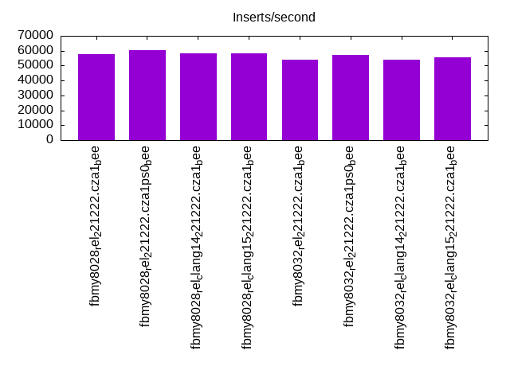
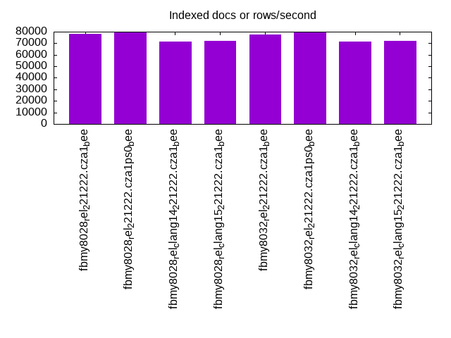
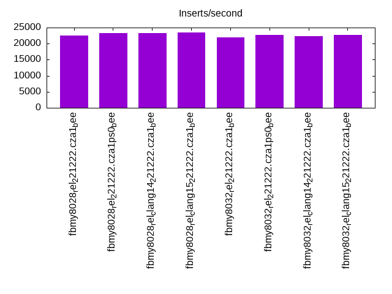
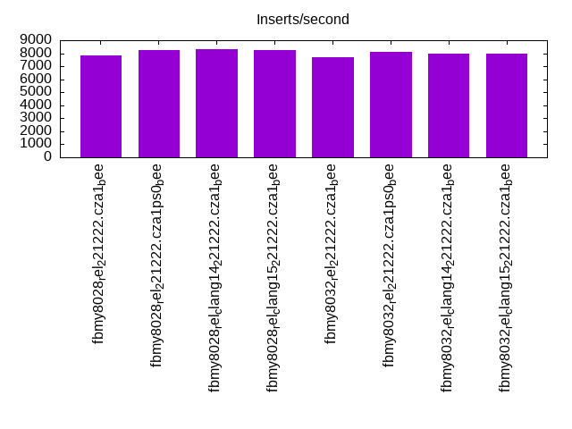
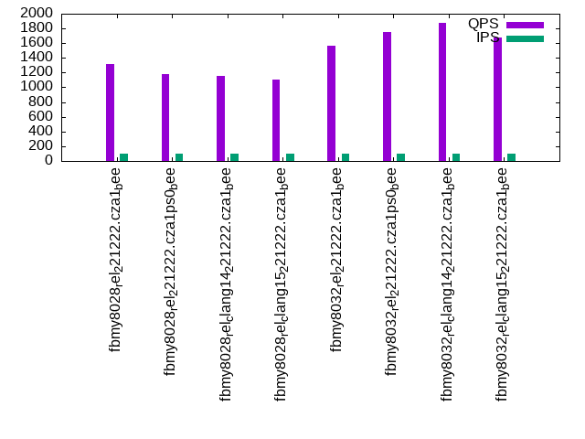
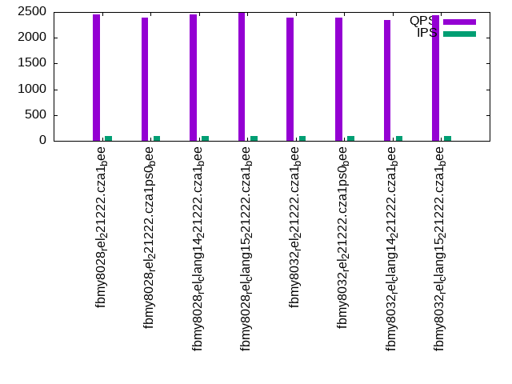
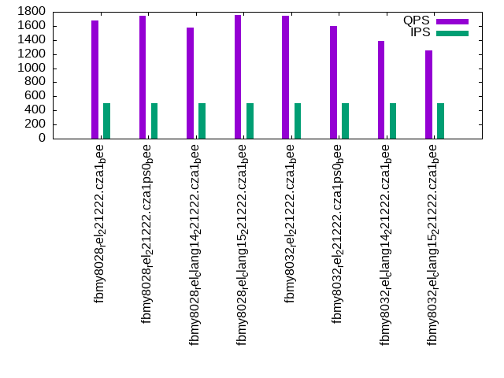
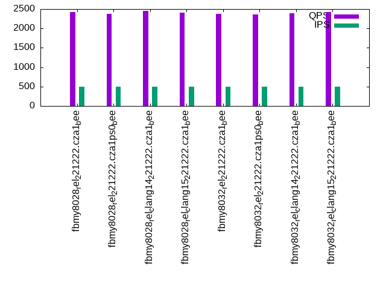
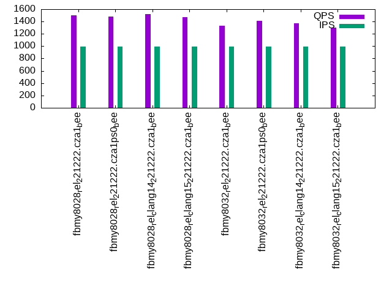
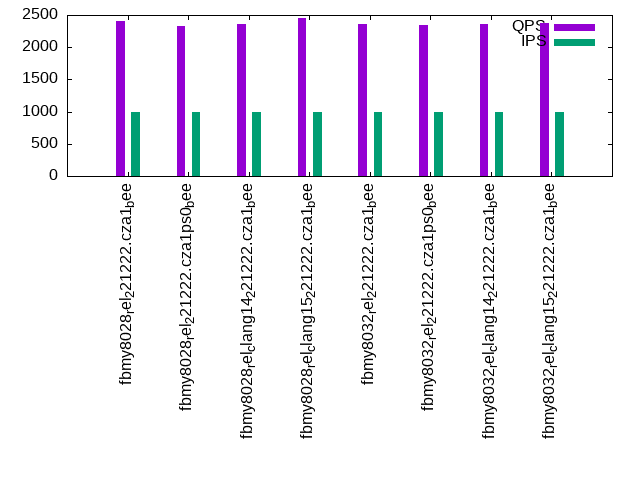

This is a report for the insert benchmark with 30M docs and 1 client(s). It is generated by scripts (bash, awk, sed) and Tufte might not be impressed. An overview of the insert benchmark is here and a short update is here. Below, by DBMS, I mean DBMS+version.config. An example is my8020.c10b40 where my means MySQL, 8020 is version 8.0.20 and c10b40 is the name for the configuration file.
The test server has a Beelink SER4 with 8 AMD cores, 16G RAM and an NVMe SSD. It is described here. The benchmark was run with 1 client and there were 1 or 3 connections per client (1 for queries or inserts without rate limits, 1+1 for rate limited inserts+deletes). It uses 1 table. It loads 30M rows per table without secondary indexes, creates 3 secondary indexes per table, then inserts 50m+50m rows per table with a delete per insert to avoid growing the table. It then does 6 read+write tests for 1800s each that do queries as fast as possible with 100,100,500,500,1000,1000 inserts/s and the same for deletes/s per client concurrent with the queries. The database is cached in memory. Clients and the DBMS share one server. The per-database configs are in the per-database subdirectories here. All builds were compiled with gcc 11.4.0 unless noted.
The tested DBMS are:
The numbers are inserts/s for l.i0, l.i1 and l.i2, indexed docs (or rows) /s for l.x and queries/s for qr100, qp100 thru qr1000, qp1000" The values are the average rate over the entire test for inserts (IPS) and queries (QPS). The range of values for IPS and QPS is split into 3 parts: bottom 25%, middle 50%, top 25%. Values in the bottom 25% have a red background, values in the top 25% have a green background and values in the middle have no color. A gray background is used for values that can be ignored because the DBMS did not sustain the target insert rate. Red backgrounds are not used when the minimum value is within 80% of the max value.
| dbms | l.i0 | l.x | l.i1 | l.i2 | qr100 | qp100 | qr500 | qp500 | qr1000 | qp1000 |
|---|---|---|---|---|---|---|---|---|---|---|
| fbmy8028_rel_221222.cza1_bee | 57803 | 77922 | 22612 | 7837 | 1314 | 2450 | 1681 | 2418 | 1505 | 2414 |
| fbmy8028_rel_221222.cza1ps0_bee | 60120 | 79576 | 23310 | 8244 | 1185 | 2395 | 1743 | 2373 | 1477 | 2333 |
| fbmy8028_rel_clang14_221222.cza1_bee | 58480 | 71429 | 23337 | 8285 | 1151 | 2454 | 1575 | 2453 | 1519 | 2356 |
| fbmy8028_rel_clang15_221222.cza1_bee | 58366 | 71943 | 23392 | 8264 | 1106 | 2495 | 1760 | 2410 | 1469 | 2460 |
| fbmy8032_rel_221222.cza1_bee | 53957 | 77320 | 21954 | 7669 | 1562 | 2394 | 1746 | 2374 | 1333 | 2354 |
| fbmy8032_rel_221222.cza1ps0_bee | 56926 | 79156 | 22779 | 8091 | 1748 | 2384 | 1601 | 2368 | 1410 | 2338 |
| fbmy8032_rel_clang14_221222.cza1_bee | 54054 | 71259 | 22321 | 7974 | 1870 | 2338 | 1382 | 2396 | 1369 | 2361 |
| fbmy8032_rel_clang15_221222.cza1_bee | 55350 | 71943 | 22740 | 7962 | 1671 | 2438 | 1250 | 2422 | 1299 | 2372 |
This table has relative throughput, throughput for the DBMS relative to the DBMS in the first line, using the absolute throughput from the previous table. Values less than 0.95 have a yellow background. Values greater than 1.05 have a blue background.
| dbms | l.i0 | l.x | l.i1 | l.i2 | qr100 | qp100 | qr500 | qp500 | qr1000 | qp1000 |
|---|---|---|---|---|---|---|---|---|---|---|
| fbmy8028_rel_221222.cza1_bee | 1.00 | 1.00 | 1.00 | 1.00 | 1.00 | 1.00 | 1.00 | 1.00 | 1.00 | 1.00 |
| fbmy8028_rel_221222.cza1ps0_bee | 1.04 | 1.02 | 1.03 | 1.05 | 0.90 | 0.98 | 1.04 | 0.98 | 0.98 | 0.97 |
| fbmy8028_rel_clang14_221222.cza1_bee | 1.01 | 0.92 | 1.03 | 1.06 | 0.88 | 1.00 | 0.94 | 1.01 | 1.01 | 0.98 |
| fbmy8028_rel_clang15_221222.cza1_bee | 1.01 | 0.92 | 1.03 | 1.05 | 0.84 | 1.02 | 1.05 | 1.00 | 0.98 | 1.02 |
| fbmy8032_rel_221222.cza1_bee | 0.93 | 0.99 | 0.97 | 0.98 | 1.19 | 0.98 | 1.04 | 0.98 | 0.89 | 0.98 |
| fbmy8032_rel_221222.cza1ps0_bee | 0.98 | 1.02 | 1.01 | 1.03 | 1.33 | 0.97 | 0.95 | 0.98 | 0.94 | 0.97 |
| fbmy8032_rel_clang14_221222.cza1_bee | 0.94 | 0.91 | 0.99 | 1.02 | 1.42 | 0.95 | 0.82 | 0.99 | 0.91 | 0.98 |
| fbmy8032_rel_clang15_221222.cza1_bee | 0.96 | 0.92 | 1.01 | 1.02 | 1.27 | 1.00 | 0.74 | 1.00 | 0.86 | 0.98 |
This lists the average rate of inserts/s for the tests that do inserts concurrent with queries. For such tests the query rate is listed in the table above. The read+write tests are setup so that the insert rate should match the target rate every second. Cells that are not at least 95% of the target have a red background to indicate a failure to satisfy the target.
| dbms | qr100.L1 | qp100.L2 | qr500.L3 | qp500.L4 | qr1000.L5 | qp1000.L6 |
|---|---|---|---|---|---|---|
| fbmy8028_rel_221222.cza1_bee | 100 | 100 | 499 | 499 | 998 | 998 |
| fbmy8028_rel_221222.cza1ps0_bee | 100 | 100 | 499 | 499 | 998 | 998 |
| fbmy8028_rel_clang14_221222.cza1_bee | 100 | 100 | 499 | 499 | 998 | 997 |
| fbmy8028_rel_clang15_221222.cza1_bee | 100 | 100 | 499 | 499 | 998 | 998 |
| fbmy8032_rel_221222.cza1_bee | 100 | 100 | 499 | 499 | 998 | 998 |
| fbmy8032_rel_221222.cza1ps0_bee | 100 | 100 | 499 | 499 | 998 | 998 |
| fbmy8032_rel_clang14_221222.cza1_bee | 100 | 100 | 499 | 499 | 998 | 998 |
| fbmy8032_rel_clang15_221222.cza1_bee | 100 | 100 | 499 | 499 | 998 | 998 |
| target | 100 | 100 | 500 | 500 | 1000 | 1000 |
l.i0: load without secondary indexes. Graphs for performance per 1-second interval are here.
Average throughput:
Insert response time histogram: each cell has the percentage of responses that take <= the time in the header and max is the max response time in seconds. For the max column values in the top 25% of the range have a red background and in the bottom 25% of the range have a green background. The red background is not used when the min value is within 80% of the max value.
| dbms | 256us | 1ms | 4ms | 16ms | 64ms | 256ms | 1s | 4s | 16s | gt | max |
|---|---|---|---|---|---|---|---|---|---|---|---|
| fbmy8028_rel_221222.cza1_bee | 99.723 | 0.203 | 0.071 | 0.003 | 0.082 | ||||||
| fbmy8028_rel_221222.cza1ps0_bee | 99.730 | 0.196 | 0.071 | 0.003 | 0.073 | ||||||
| fbmy8028_rel_clang14_221222.cza1_bee | 99.726 | 0.195 | 0.076 | 0.003 | 0.082 | ||||||
| fbmy8028_rel_clang15_221222.cza1_bee | 99.726 | 0.196 | 0.074 | 0.003 | 0.080 | ||||||
| fbmy8032_rel_221222.cza1_bee | 99.712 | 0.208 | 0.078 | 0.002 | 0.070 | ||||||
| fbmy8032_rel_221222.cza1ps0_bee | 99.719 | 0.203 | 0.076 | 0.001 | 0.072 | ||||||
| fbmy8032_rel_clang14_221222.cza1_bee | 99.712 | 0.206 | 0.080 | 0.002 | 0.073 | ||||||
| fbmy8032_rel_clang15_221222.cza1_bee | 99.717 | 0.201 | 0.080 | 0.003 | 0.074 |
Performance metrics for the DBMS listed above. Some are normalized by throughput, others are not. Legend for results is here.
ips qps rps rmbps wps wmbps rpq rkbpq wpi wkbpi csps cpups cspq cpupq dbgb1 dbgb2 rss maxop p50 p99 tag 57803 0 0 0.0 36.3 11.9 0.000 0.000 0.001 0.211 6068 22.6 0.105 31 0.9 2.7 0.6 0.082 58037 51263 fbmy8028_rel_221222.cza1_bee 60120 0 0 0.0 37.6 12.3 0.000 0.000 0.001 0.210 6275 22.7 0.104 30 0.9 2.7 0.4 0.073 60503 54555 fbmy8028_rel_221222.cza1ps0_bee 58480 0 0 0.0 36.8 12.0 0.000 0.000 0.001 0.211 6138 22.6 0.105 31 0.9 2.7 0.6 0.082 58658 52969 fbmy8028_rel_clang14_221222.cza1_bee 58366 0 0 0.0 36.5 12.0 0.000 0.000 0.001 0.211 6116 22.5 0.105 31 0.9 2.7 0.6 0.080 58634 52940 fbmy8028_rel_clang15_221222.cza1_bee 53957 0 0 0.0 34.8 11.1 0.000 0.000 0.001 0.210 5839 21.7 0.108 32 0.9 2.7 0.6 0.070 54139 49644 fbmy8032_rel_221222.cza1_bee 56926 0 0 0.0 36.7 11.7 0.000 0.000 0.001 0.211 6112 22.0 0.107 31 0.9 2.7 0.4 0.072 57138 51942 fbmy8032_rel_221222.cza1ps0_bee 54054 0 0 0.0 34.9 11.1 0.000 0.000 0.001 0.210 5835 21.6 0.108 32 0.9 2.7 0.6 0.073 54180 49461 fbmy8032_rel_clang14_221222.cza1_bee 55350 0 0 0.0 35.6 11.4 0.000 0.000 0.001 0.210 5974 21.8 0.108 32 0.9 2.7 0.6 0.074 55535 50039 fbmy8032_rel_clang15_221222.cza1_bee
l.x: create secondary indexes.
Average throughput:
Performance metrics for the DBMS listed above. Some are normalized by throughput, others are not. Legend for results is here.
ips qps rps rmbps wps wmbps rpq rkbpq wpi wkbpi csps cpups cspq cpupq dbgb1 dbgb2 rss maxop p50 p99 tag 77922 0 0 0.0 31.2 12.1 0.000 0.000 0.000 0.159 357 11.7 0.005 12 2.0 3.8 2.7 0.003 NA NA fbmy8028_rel_221222.cza1_bee 79576 0 0 0.0 32.0 12.3 0.000 0.000 0.000 0.158 384 11.7 0.005 12 2.0 3.8 2.5 0.003 NA NA fbmy8028_rel_221222.cza1ps0_bee 71429 0 0 0.0 28.7 11.0 0.000 0.000 0.000 0.158 342 11.7 0.005 13 2.0 3.8 2.7 0.003 NA NA fbmy8028_rel_clang14_221222.cza1_bee 71943 0 0 0.0 28.9 11.1 0.000 0.000 0.000 0.158 350 11.8 0.005 13 2.0 3.8 2.7 0.003 NA NA fbmy8028_rel_clang15_221222.cza1_bee 77320 0 0 0.0 30.9 11.9 0.000 0.000 0.000 0.158 582 11.8 0.008 12 2.0 3.8 2.7 0.003 NA NA fbmy8032_rel_221222.cza1_bee 79156 0 0 0.0 31.5 12.2 0.000 0.000 0.000 0.158 584 11.7 0.007 12 2.0 3.8 2.5 0.003 NA NA fbmy8032_rel_221222.cza1ps0_bee 71259 0 0 0.0 28.6 11.0 0.000 0.000 0.000 0.159 566 11.7 0.008 13 2.0 3.8 2.7 0.003 NA NA fbmy8032_rel_clang14_221222.cza1_bee 71943 0 0 0.0 28.9 11.1 0.000 0.000 0.000 0.158 580 11.8 0.008 13 2.0 3.8 2.7 0.003 NA NA fbmy8032_rel_clang15_221222.cza1_bee
l.i1: continue load after secondary indexes created with 50 inserts per transaction. Graphs for performance per 1-second interval are here.
Average throughput:
Insert response time histogram: each cell has the percentage of responses that take <= the time in the header and max is the max response time in seconds. For the max column values in the top 25% of the range have a red background and in the bottom 25% of the range have a green background. The red background is not used when the min value is within 80% of the max value.
| dbms | 256us | 1ms | 4ms | 16ms | 64ms | 256ms | 1s | 4s | 16s | gt | max |
|---|---|---|---|---|---|---|---|---|---|---|---|
| fbmy8028_rel_221222.cza1_bee | 99.669 | 0.267 | 0.060 | 0.003 | 0.087 | ||||||
| fbmy8028_rel_221222.cza1ps0_bee | 99.675 | 0.256 | 0.065 | 0.003 | 0.093 | ||||||
| fbmy8028_rel_clang14_221222.cza1_bee | 99.675 | 0.263 | 0.059 | 0.003 | 0.090 | ||||||
| fbmy8028_rel_clang15_221222.cza1_bee | 99.674 | 0.263 | 0.060 | 0.003 | 0.091 | ||||||
| fbmy8032_rel_221222.cza1_bee | 99.660 | 0.272 | 0.067 | 0.002 | 0.079 | ||||||
| fbmy8032_rel_221222.cza1ps0_bee | 99.668 | 0.265 | 0.065 | 0.001 | 0.076 | ||||||
| fbmy8032_rel_clang14_221222.cza1_bee | 99.665 | 0.266 | 0.067 | 0.002 | 0.077 | ||||||
| fbmy8032_rel_clang15_221222.cza1_bee | 99.669 | 0.261 | 0.068 | 0.002 | 0.090 |
Delete response time histogram: each cell has the percentage of responses that take <= the time in the header and max is the max response time in seconds. For the max column values in the top 25% of the range have a red background and in the bottom 25% of the range have a green background. The red background is not used when the min value is within 80% of the max value.
| dbms | 256us | 1ms | 4ms | 16ms | 64ms | 256ms | 1s | 4s | 16s | gt | max |
|---|---|---|---|---|---|---|---|---|---|---|---|
| fbmy8028_rel_221222.cza1_bee | 99.659 | 0.271 | 0.067 | 0.003 | 0.093 | ||||||
| fbmy8028_rel_221222.cza1ps0_bee | 99.664 | 0.260 | 0.072 | 0.003 | 0.088 | ||||||
| fbmy8028_rel_clang14_221222.cza1_bee | 99.668 | 0.264 | 0.065 | 0.003 | 0.088 | ||||||
| fbmy8028_rel_clang15_221222.cza1_bee | 99.666 | 0.264 | 0.068 | 0.003 | 0.089 | ||||||
| fbmy8032_rel_221222.cza1_bee | 99.650 | 0.273 | 0.075 | 0.002 | 0.089 | ||||||
| fbmy8032_rel_221222.cza1ps0_bee | 99.661 | 0.266 | 0.072 | 0.002 | 0.081 | ||||||
| fbmy8032_rel_clang14_221222.cza1_bee | 99.656 | 0.268 | 0.074 | 0.002 | 0.090 | ||||||
| fbmy8032_rel_clang15_221222.cza1_bee | 99.662 | 0.262 | 0.074 | 0.002 | 0.078 |
Performance metrics for the DBMS listed above. Some are normalized by throughput, others are not. Legend for results is here.
ips qps rps rmbps wps wmbps rpq rkbpq wpi wkbpi csps cpups cspq cpupq dbgb1 dbgb2 rss maxop p50 p99 tag 22612 0 139 0.8 107.7 41.3 0.006 0.035 0.005 1.868 10151 46.1 0.449 163 2.6 3.5 5.3 0.087 22575 20126 fbmy8028_rel_221222.cza1_bee 23310 0 129 0.7 110.0 41.9 0.006 0.031 0.005 1.840 10427 46.1 0.447 158 2.4 3.2 5.1 0.093 23272 20835 fbmy8028_rel_221222.cza1ps0_bee 23337 0 142 0.8 110.2 41.8 0.006 0.034 0.005 1.835 10425 46.6 0.447 160 3.0 3.8 5.4 0.090 23274 20575 fbmy8028_rel_clang14_221222.cza1_bee 23392 0 138 0.8 111.2 42.6 0.006 0.033 0.005 1.863 10458 46.5 0.447 159 2.4 3.2 5.4 0.091 23333 20927 fbmy8028_rel_clang15_221222.cza1_bee 21954 0 122 0.7 103.9 39.5 0.006 0.032 0.005 1.841 10003 45.6 0.456 166 2.3 3.1 5.3 0.079 21925 19382 fbmy8032_rel_221222.cza1_bee 22779 0 137 0.8 107.7 40.8 0.006 0.034 0.005 1.834 10387 46.1 0.456 162 2.3 3.1 5.1 0.076 22723 20577 fbmy8032_rel_221222.cza1ps0_bee 22321 0 126 0.7 105.5 39.9 0.006 0.032 0.005 1.833 10141 45.8 0.454 164 2.5 3.4 5.3 0.077 22275 19994 fbmy8032_rel_clang14_221222.cza1_bee 22740 0 130 0.7 106.3 40.3 0.006 0.033 0.005 1.816 10361 46.1 0.456 162 2.7 3.5 5.3 0.090 22675 20427 fbmy8032_rel_clang15_221222.cza1_bee
l.i2: continue load after secondary indexes created with 5 inserts per transaction. Graphs for performance per 1-second interval are here.
Average throughput:
Insert response time histogram: each cell has the percentage of responses that take <= the time in the header and max is the max response time in seconds. For the max column values in the top 25% of the range have a red background and in the bottom 25% of the range have a green background. The red background is not used when the min value is within 80% of the max value.
| dbms | 256us | 1ms | 4ms | 16ms | 64ms | 256ms | 1s | 4s | 16s | gt | max |
|---|---|---|---|---|---|---|---|---|---|---|---|
| fbmy8028_rel_221222.cza1_bee | 99.826 | 0.089 | 0.082 | 0.002 | 0.001 | 0.096 | |||||
| fbmy8028_rel_221222.cza1ps0_bee | 99.847 | 0.072 | 0.078 | 0.002 | nonzero | 0.074 | |||||
| fbmy8028_rel_clang14_221222.cza1_bee | 99.866 | 0.053 | 0.078 | 0.003 | nonzero | 0.079 | |||||
| fbmy8028_rel_clang15_221222.cza1_bee | 99.845 | 0.073 | 0.079 | 0.002 | nonzero | 0.094 | |||||
| fbmy8032_rel_221222.cza1_bee | 99.808 | 0.106 | 0.083 | 0.003 | nonzero | 0.068 | |||||
| fbmy8032_rel_221222.cza1ps0_bee | 99.820 | 0.098 | 0.079 | 0.003 | nonzero | 0.068 | |||||
| fbmy8032_rel_clang14_221222.cza1_bee | 99.835 | 0.082 | 0.080 | 0.003 | nonzero | 0.081 | |||||
| fbmy8032_rel_clang15_221222.cza1_bee | 99.820 | 0.096 | 0.081 | 0.002 | nonzero | 0.071 |
Delete response time histogram: each cell has the percentage of responses that take <= the time in the header and max is the max response time in seconds. For the max column values in the top 25% of the range have a red background and in the bottom 25% of the range have a green background. The red background is not used when the min value is within 80% of the max value.
| dbms | 256us | 1ms | 4ms | 16ms | 64ms | 256ms | 1s | 4s | 16s | gt | max |
|---|---|---|---|---|---|---|---|---|---|---|---|
| fbmy8028_rel_221222.cza1_bee | 99.780 | 0.133 | 0.084 | 0.003 | nonzero | 0.083 | |||||
| fbmy8028_rel_221222.cza1ps0_bee | 99.828 | 0.089 | 0.080 | 0.003 | nonzero | 0.081 | |||||
| fbmy8028_rel_clang14_221222.cza1_bee | 99.836 | 0.080 | 0.080 | 0.003 | nonzero | 0.080 | |||||
| fbmy8028_rel_clang15_221222.cza1_bee | 99.815 | 0.102 | 0.081 | 0.002 | nonzero | 0.090 | |||||
| fbmy8032_rel_221222.cza1_bee | 99.751 | 0.162 | 0.084 | 0.003 | nonzero | 0.068 | |||||
| fbmy8032_rel_221222.cza1ps0_bee | 99.784 | 0.131 | 0.082 | 0.003 | nonzero | 0.065 | |||||
| fbmy8032_rel_clang14_221222.cza1_bee | 99.777 | 0.137 | 0.082 | 0.003 | nonzero | 0.073 | |||||
| fbmy8032_rel_clang15_221222.cza1_bee | 99.762 | 0.152 | 0.083 | 0.003 | nonzero | 0.084 |
Performance metrics for the DBMS listed above. Some are normalized by throughput, others are not. Legend for results is here.
ips qps rps rmbps wps wmbps rpq rkbpq wpi wkbpi csps cpups cspq cpupq dbgb1 dbgb2 rss maxop p50 p99 tag 7837 0 26 0.1 96.1 34.8 0.003 0.019 0.012 4.553 32754 43.0 4.179 439 2.2 2.6 7.5 0.096 7826 6852 fbmy8028_rel_221222.cza1_bee 8244 0 0 0.0 97.4 35.4 0.000 0.000 0.012 4.396 34125 43.4 4.139 421 2.3 2.7 7.2 0.074 8191 7262 fbmy8028_rel_221222.cza1ps0_bee 8285 0 26 0.1 93.7 34.3 0.003 0.017 0.011 4.242 34213 43.5 4.129 420 2.3 2.6 7.3 0.079 8246 7272 fbmy8028_rel_clang14_221222.cza1_bee 8264 0 27 0.2 98.2 35.4 0.003 0.019 0.012 4.390 34339 43.8 4.155 424 2.2 2.5 7.5 0.094 8246 7332 fbmy8028_rel_clang15_221222.cza1_bee 7669 0 14 0.1 92.5 33.9 0.002 0.010 0.012 4.525 32196 42.9 4.198 448 2.2 2.5 7.4 0.068 7626 6742 fbmy8032_rel_221222.cza1_bee 8091 0 21 0.1 99.8 36.2 0.003 0.015 0.012 4.586 33826 43.7 4.181 432 2.2 2.5 7.3 0.068 8086 7111 fbmy8032_rel_221222.cza1ps0_bee 7974 0 26 0.1 94.9 34.6 0.003 0.019 0.012 4.448 33304 43.6 4.176 437 2.2 2.5 7.4 0.081 7968 6864 fbmy8032_rel_clang14_221222.cza1_bee 7962 0 16 0.1 96.8 35.0 0.002 0.011 0.012 4.501 33354 43.7 4.189 439 2.2 2.5 7.4 0.071 7956 7007 fbmy8032_rel_clang15_221222.cza1_bee
qr100.L1: range queries with 100 insert/s per client. Graphs for performance per 1-second interval are here.
Average throughput:
Query response time histogram: each cell has the percentage of responses that take <= the time in the header and max is the max response time in seconds. For max values in the top 25% of the range have a red background and in the bottom 25% of the range have a green background. The red background is not used when the min value is within 80% of the max value.
| dbms | 256us | 1ms | 4ms | 16ms | 64ms | 256ms | 1s | 4s | 16s | gt | max |
|---|---|---|---|---|---|---|---|---|---|---|---|
| fbmy8028_rel_221222.cza1_bee | 5.684 | 61.043 | 33.273 | nonzero | nonzero | 0.028 | |||||
| fbmy8028_rel_221222.cza1ps0_bee | 6.346 | 60.352 | 33.301 | 0.001 | nonzero | 0.029 | |||||
| fbmy8028_rel_clang14_221222.cza1_bee | 3.223 | 64.211 | 32.566 | nonzero | nonzero | 0.031 | |||||
| fbmy8028_rel_clang15_221222.cza1_bee | 4.463 | 63.100 | 32.437 | nonzero | nonzero | 0.029 | |||||
| fbmy8032_rel_221222.cza1_bee | 8.397 | 72.433 | 19.170 | nonzero | nonzero | 0.024 | |||||
| fbmy8032_rel_221222.cza1ps0_bee | 9.377 | 76.696 | 13.927 | nonzero | nonzero | 0.032 | |||||
| fbmy8032_rel_clang14_221222.cza1_bee | 8.886 | 78.192 | 12.921 | nonzero | nonzero | 0.028 | |||||
| fbmy8032_rel_clang15_221222.cza1_bee | 9.654 | 77.545 | 12.800 | nonzero | nonzero | 0.028 |
Insert response time histogram: each cell has the percentage of responses that take <= the time in the header and max is the max response time in seconds. For max values in the top 25% of the range have a red background and in the bottom 25% of the range have a green background. The red background is not used when the min value is within 80% of the max value.
| dbms | 256us | 1ms | 4ms | 16ms | 64ms | 256ms | 1s | 4s | 16s | gt | max |
|---|---|---|---|---|---|---|---|---|---|---|---|
| fbmy8028_rel_221222.cza1_bee | 99.083 | 0.889 | 0.028 | 0.017 | |||||||
| fbmy8028_rel_221222.cza1ps0_bee | 99.611 | 0.333 | 0.056 | 0.017 | |||||||
| fbmy8028_rel_clang14_221222.cza1_bee | 99.500 | 0.444 | 0.056 | 0.018 | |||||||
| fbmy8028_rel_clang15_221222.cza1_bee | 99.611 | 0.306 | 0.083 | 0.018 | |||||||
| fbmy8032_rel_221222.cza1_bee | 99.417 | 0.556 | 0.028 | 0.018 | |||||||
| fbmy8032_rel_221222.cza1ps0_bee | 99.444 | 0.500 | 0.056 | 0.018 | |||||||
| fbmy8032_rel_clang14_221222.cza1_bee | 99.306 | 0.667 | 0.028 | 0.017 | |||||||
| fbmy8032_rel_clang15_221222.cza1_bee | 99.667 | 0.278 | 0.056 | 0.018 |
Delete response time histogram: each cell has the percentage of responses that take <= the time in the header and max is the max response time in seconds. For max values in the top 25% of the range have a red background and in the bottom 25% of the range have a green background. The red background is not used when the min value is within 80% of the max value.
| dbms | 256us | 1ms | 4ms | 16ms | 64ms | 256ms | 1s | 4s | 16s | gt | max |
|---|---|---|---|---|---|---|---|---|---|---|---|
| fbmy8028_rel_221222.cza1_bee | 99.306 | 0.667 | 0.028 | 0.017 | |||||||
| fbmy8028_rel_221222.cza1ps0_bee | 99.667 | 0.306 | 0.028 | 0.017 | |||||||
| fbmy8028_rel_clang14_221222.cza1_bee | 99.556 | 0.389 | 0.056 | 0.017 | |||||||
| fbmy8028_rel_clang15_221222.cza1_bee | 99.722 | 0.222 | 0.056 | 0.018 | |||||||
| fbmy8032_rel_221222.cza1_bee | 99.556 | 0.417 | 0.028 | 0.018 | |||||||
| fbmy8032_rel_221222.cza1ps0_bee | 99.528 | 0.444 | 0.028 | 0.018 | |||||||
| fbmy8032_rel_clang14_221222.cza1_bee | 99.444 | 0.528 | 0.028 | 0.017 | |||||||
| fbmy8032_rel_clang15_221222.cza1_bee | 99.694 | 0.250 | 0.056 | 0.018 |
Performance metrics for the DBMS listed above. Some are normalized by throughput, others are not. Legend for results is here.
ips qps rps rmbps wps wmbps rpq rkbpq wpi wkbpi csps cpups cspq cpupq dbgb1 dbgb2 rss maxop p50 p99 tag 100 1314 0 0.0 4.1 0.4 0.000 0.000 0.041 3.644 5306 12.6 4.038 767 2.1 2.3 7.8 0.028 1311 1215 fbmy8028_rel_221222.cza1_bee 100 1185 0 0.0 4.2 0.5 0.000 0.000 0.042 4.726 4823 12.7 4.070 857 2.1 2.3 7.5 0.029 1183 1087 fbmy8028_rel_221222.cza1ps0_bee 100 1151 0 0.0 4.5 0.5 0.000 0.000 0.045 5.139 4689 12.7 4.074 883 2.1 2.3 7.6 0.031 1151 1039 fbmy8028_rel_clang14_221222.cza1_bee 100 1106 0 0.0 4.3 0.4 0.000 0.000 0.043 4.360 4507 12.6 4.074 911 2.1 2.4 7.8 0.029 1095 1006 fbmy8028_rel_clang15_221222.cza1_bee 100 1562 0 0.0 4.1 0.3 0.000 0.000 0.041 3.439 6445 12.5 4.126 640 2.1 2.3 7.7 0.024 1566 1440 fbmy8032_rel_221222.cza1_bee 100 1748 0 0.0 4.5 0.5 0.000 0.000 0.045 4.698 7141 12.5 4.084 572 2.1 2.4 7.5 0.032 1742 1390 fbmy8032_rel_221222.cza1ps0_bee 100 1870 0 0.0 4.1 0.4 0.000 0.000 0.041 3.697 7612 12.7 4.069 543 2.1 2.4 7.6 0.028 1870 1614 fbmy8032_rel_clang14_221222.cza1_bee 100 1671 0 0.0 4.1 0.4 0.000 0.000 0.041 3.850 6851 12.5 4.100 598 2.1 2.4 7.6 0.028 1663 1519 fbmy8032_rel_clang15_221222.cza1_bee
qp100.L2: point queries with 100 insert/s per client. Graphs for performance per 1-second interval are here.
Average throughput:
Query response time histogram: each cell has the percentage of responses that take <= the time in the header and max is the max response time in seconds. For max values in the top 25% of the range have a red background and in the bottom 25% of the range have a green background. The red background is not used when the min value is within 80% of the max value.
| dbms | 256us | 1ms | 4ms | 16ms | 64ms | 256ms | 1s | 4s | 16s | gt | max |
|---|---|---|---|---|---|---|---|---|---|---|---|
| fbmy8028_rel_221222.cza1_bee | nonzero | 99.984 | 0.014 | 0.001 | 0.010 | ||||||
| fbmy8028_rel_221222.cza1ps0_bee | 0.003 | 99.994 | 0.003 | nonzero | 0.005 | ||||||
| fbmy8028_rel_clang14_221222.cza1_bee | 99.992 | 0.007 | 0.001 | 0.010 | |||||||
| fbmy8028_rel_clang15_221222.cza1_bee | nonzero | 99.991 | 0.008 | 0.001 | 0.010 | ||||||
| fbmy8032_rel_221222.cza1_bee | nonzero | 99.991 | 0.008 | 0.002 | 0.010 | ||||||
| fbmy8032_rel_221222.cza1ps0_bee | nonzero | 99.992 | 0.006 | 0.002 | 0.010 | ||||||
| fbmy8032_rel_clang14_221222.cza1_bee | 99.988 | 0.011 | 0.001 | 0.010 | |||||||
| fbmy8032_rel_clang15_221222.cza1_bee | 99.992 | 0.006 | 0.002 | 0.010 |
Insert response time histogram: each cell has the percentage of responses that take <= the time in the header and max is the max response time in seconds. For max values in the top 25% of the range have a red background and in the bottom 25% of the range have a green background. The red background is not used when the min value is within 80% of the max value.
| dbms | 256us | 1ms | 4ms | 16ms | 64ms | 256ms | 1s | 4s | 16s | gt | max |
|---|---|---|---|---|---|---|---|---|---|---|---|
| fbmy8028_rel_221222.cza1_bee | 99.694 | 0.278 | 0.028 | 0.018 | |||||||
| fbmy8028_rel_221222.cza1ps0_bee | 99.417 | 0.500 | 0.083 | 0.017 | |||||||
| fbmy8028_rel_clang14_221222.cza1_bee | 99.417 | 0.528 | 0.056 | 0.017 | |||||||
| fbmy8028_rel_clang15_221222.cza1_bee | 99.417 | 0.528 | 0.056 | 0.017 | |||||||
| fbmy8032_rel_221222.cza1_bee | 99.250 | 0.722 | 0.028 | 0.017 | |||||||
| fbmy8032_rel_221222.cza1ps0_bee | 99.472 | 0.500 | 0.028 | 0.018 | |||||||
| fbmy8032_rel_clang14_221222.cza1_bee | 99.583 | 0.333 | 0.083 | 0.017 | |||||||
| fbmy8032_rel_clang15_221222.cza1_bee | 99.361 | 0.583 | 0.056 | 0.017 |
Delete response time histogram: each cell has the percentage of responses that take <= the time in the header and max is the max response time in seconds. For max values in the top 25% of the range have a red background and in the bottom 25% of the range have a green background. The red background is not used when the min value is within 80% of the max value.
| dbms | 256us | 1ms | 4ms | 16ms | 64ms | 256ms | 1s | 4s | 16s | gt | max |
|---|---|---|---|---|---|---|---|---|---|---|---|
| fbmy8028_rel_221222.cza1_bee | 99.806 | 0.167 | 0.028 | 0.017 | |||||||
| fbmy8028_rel_221222.cza1ps0_bee | 99.556 | 0.389 | 0.056 | 0.017 | |||||||
| fbmy8028_rel_clang14_221222.cza1_bee | 99.528 | 0.444 | 0.028 | 0.017 | |||||||
| fbmy8028_rel_clang15_221222.cza1_bee | 99.528 | 0.417 | 0.056 | 0.017 | |||||||
| fbmy8032_rel_221222.cza1_bee | 99.444 | 0.528 | 0.028 | 0.017 | |||||||
| fbmy8032_rel_221222.cza1ps0_bee | 99.611 | 0.389 | 0.009 | ||||||||
| fbmy8032_rel_clang14_221222.cza1_bee | 99.667 | 0.250 | 0.083 | 0.017 | |||||||
| fbmy8032_rel_clang15_221222.cza1_bee | 99.472 | 0.472 | 0.056 | 0.017 |
Performance metrics for the DBMS listed above. Some are normalized by throughput, others are not. Legend for results is here.
ips qps rps rmbps wps wmbps rpq rkbpq wpi wkbpi csps cpups cspq cpupq dbgb1 dbgb2 rss maxop p50 p99 tag 100 2450 34 0.2 4.2 0.4 0.014 0.087 0.042 4.437 10237 13.6 4.178 444 2.1 2.4 8.9 0.010 2429 1902 fbmy8028_rel_221222.cza1_bee 100 2395 0 0.0 4.0 0.4 0.000 0.000 0.040 3.699 9969 13.1 4.163 438 2.1 2.4 8.6 0.005 2286 2047 fbmy8028_rel_221222.cza1ps0_bee 100 2454 24 0.1 3.9 0.4 0.010 0.060 0.039 3.653 10214 13.3 4.163 434 2.1 2.4 8.8 0.010 2413 1982 fbmy8028_rel_clang14_221222.cza1_bee 100 2495 25 0.2 4.2 0.4 0.010 0.063 0.042 4.329 10388 13.6 4.164 436 2.1 2.4 8.8 0.010 2461 2014 fbmy8028_rel_clang15_221222.cza1_bee 100 2394 17 0.1 4.0 0.4 0.007 0.044 0.040 3.733 10149 13.3 4.240 445 2.1 2.4 8.8 0.010 2366 1902 fbmy8032_rel_221222.cza1_bee 100 2384 26 0.2 4.4 0.5 0.011 0.069 0.044 4.964 10122 13.6 4.245 456 2.1 2.4 8.6 0.010 2237 2048 fbmy8032_rel_221222.cza1ps0_bee 100 2338 28 0.2 4.2 0.5 0.012 0.074 0.042 4.765 9949 13.5 4.255 462 2.1 2.4 8.8 0.010 2317 1918 fbmy8032_rel_clang14_221222.cza1_bee 100 2438 19 0.1 4.2 0.4 0.008 0.049 0.042 4.364 10333 13.7 4.238 449 2.1 2.4 8.8 0.010 2509 1870 fbmy8032_rel_clang15_221222.cza1_bee
qr500.L3: range queries with 500 insert/s per client. Graphs for performance per 1-second interval are here.
Average throughput:
Query response time histogram: each cell has the percentage of responses that take <= the time in the header and max is the max response time in seconds. For max values in the top 25% of the range have a red background and in the bottom 25% of the range have a green background. The red background is not used when the min value is within 80% of the max value.
| dbms | 256us | 1ms | 4ms | 16ms | 64ms | 256ms | 1s | 4s | 16s | gt | max |
|---|---|---|---|---|---|---|---|---|---|---|---|
| fbmy8028_rel_221222.cza1_bee | 6.299 | 82.901 | 10.800 | nonzero | nonzero | 0.031 | |||||
| fbmy8028_rel_221222.cza1ps0_bee | 10.338 | 82.191 | 7.432 | 0.040 | nonzero | 0.030 | |||||
| fbmy8028_rel_clang14_221222.cza1_bee | 4.929 | 83.337 | 11.734 | nonzero | nonzero | 0.029 | |||||
| fbmy8028_rel_clang15_221222.cza1_bee | 8.201 | 82.772 | 9.016 | 0.011 | nonzero | 0.031 | |||||
| fbmy8032_rel_221222.cza1_bee | 8.304 | 79.883 | 11.812 | nonzero | nonzero | 0.033 | |||||
| fbmy8032_rel_221222.cza1ps0_bee | 13.296 | 65.527 | 21.177 | nonzero | nonzero | 0.028 | |||||
| fbmy8032_rel_clang14_221222.cza1_bee | 6.561 | 69.141 | 24.298 | nonzero | nonzero | 0.035 | |||||
| fbmy8032_rel_clang15_221222.cza1_bee | 6.663 | 68.226 | 25.110 | 0.001 | nonzero | 0.030 |
Insert response time histogram: each cell has the percentage of responses that take <= the time in the header and max is the max response time in seconds. For max values in the top 25% of the range have a red background and in the bottom 25% of the range have a green background. The red background is not used when the min value is within 80% of the max value.
| dbms | 256us | 1ms | 4ms | 16ms | 64ms | 256ms | 1s | 4s | 16s | gt | max |
|---|---|---|---|---|---|---|---|---|---|---|---|
| fbmy8028_rel_221222.cza1_bee | 99.689 | 0.228 | 0.083 | 0.018 | |||||||
| fbmy8028_rel_221222.cza1ps0_bee | 99.622 | 0.289 | 0.089 | 0.025 | |||||||
| fbmy8028_rel_clang14_221222.cza1_bee | 99.506 | 0.417 | 0.078 | 0.018 | |||||||
| fbmy8028_rel_clang15_221222.cza1_bee | 99.733 | 0.183 | 0.083 | 0.018 | |||||||
| fbmy8032_rel_221222.cza1_bee | 99.617 | 0.300 | 0.083 | 0.021 | |||||||
| fbmy8032_rel_221222.cza1ps0_bee | 99.567 | 0.350 | 0.083 | 0.018 | |||||||
| fbmy8032_rel_clang14_221222.cza1_bee | 99.511 | 0.417 | 0.072 | 0.018 | |||||||
| fbmy8032_rel_clang15_221222.cza1_bee | 99.706 | 0.206 | 0.089 | 0.018 |
Delete response time histogram: each cell has the percentage of responses that take <= the time in the header and max is the max response time in seconds. For max values in the top 25% of the range have a red background and in the bottom 25% of the range have a green background. The red background is not used when the min value is within 80% of the max value.
| dbms | 256us | 1ms | 4ms | 16ms | 64ms | 256ms | 1s | 4s | 16s | gt | max |
|---|---|---|---|---|---|---|---|---|---|---|---|
| fbmy8028_rel_221222.cza1_bee | 99.711 | 0.211 | 0.078 | 0.018 | |||||||
| fbmy8028_rel_221222.cza1ps0_bee | 99.650 | 0.267 | 0.083 | 0.025 | |||||||
| fbmy8028_rel_clang14_221222.cza1_bee | 99.567 | 0.356 | 0.078 | 0.018 | |||||||
| fbmy8028_rel_clang15_221222.cza1_bee | 99.767 | 0.161 | 0.072 | 0.018 | |||||||
| fbmy8032_rel_221222.cza1_bee | 99.689 | 0.233 | 0.078 | 0.022 | |||||||
| fbmy8032_rel_221222.cza1ps0_bee | 99.556 | 0.350 | 0.094 | 0.039 | |||||||
| fbmy8032_rel_clang14_221222.cza1_bee | 99.567 | 0.378 | 0.056 | 0.018 | |||||||
| fbmy8032_rel_clang15_221222.cza1_bee | 99.750 | 0.178 | 0.072 | 0.018 |
Performance metrics for the DBMS listed above. Some are normalized by throughput, others are not. Legend for results is here.
ips qps rps rmbps wps wmbps rpq rkbpq wpi wkbpi csps cpups cspq cpupq dbgb1 dbgb2 rss maxop p50 p99 tag 499 1681 0 0.0 8.5 2.3 0.000 0.000 0.017 4.763 6853 13.6 4.076 647 2.1 2.6 8.9 0.031 1742 1071 fbmy8028_rel_221222.cza1_bee 499 1743 4 0.0 8.5 2.4 0.003 0.015 0.017 4.895 7091 13.6 4.068 624 2.1 2.6 8.7 0.030 1742 1055 fbmy8028_rel_221222.cza1ps0_bee 499 1575 0 0.0 8.4 2.3 0.000 0.000 0.017 4.690 6449 13.5 4.094 686 2.1 2.6 8.9 0.029 1567 1070 fbmy8028_rel_clang14_221222.cza1_bee 499 1760 0 0.0 8.6 2.3 0.000 0.000 0.017 4.748 7141 13.7 4.057 623 2.2 2.6 8.8 0.031 1819 1055 fbmy8028_rel_clang15_221222.cza1_bee 499 1746 0 0.0 8.7 2.4 0.000 0.000 0.017 4.845 7304 14.0 4.184 642 2.1 2.6 8.8 0.033 1806 1215 fbmy8032_rel_221222.cza1_bee 499 1601 0 0.0 8.4 2.3 0.000 0.000 0.017 4.632 6730 13.5 4.203 674 2.1 2.6 8.6 0.028 1582 1295 fbmy8032_rel_221222.cza1ps0_bee 499 1382 0 0.0 8.7 2.3 0.000 0.000 0.017 4.813 5899 13.6 4.267 787 2.1 2.6 8.8 0.035 1374 1135 fbmy8032_rel_clang14_221222.cza1_bee 499 1250 0 0.0 8.7 2.4 0.000 0.000 0.018 4.896 5395 13.7 4.318 877 2.1 2.6 8.9 0.030 1246 1038 fbmy8032_rel_clang15_221222.cza1_bee
qp500.L4: point queries with 500 insert/s per client. Graphs for performance per 1-second interval are here.
Average throughput:
Query response time histogram: each cell has the percentage of responses that take <= the time in the header and max is the max response time in seconds. For max values in the top 25% of the range have a red background and in the bottom 25% of the range have a green background. The red background is not used when the min value is within 80% of the max value.
| dbms | 256us | 1ms | 4ms | 16ms | 64ms | 256ms | 1s | 4s | 16s | gt | max |
|---|---|---|---|---|---|---|---|---|---|---|---|
| fbmy8028_rel_221222.cza1_bee | 0.002 | 99.993 | 0.005 | nonzero | 0.010 | ||||||
| fbmy8028_rel_221222.cza1ps0_bee | 0.003 | 99.992 | 0.005 | nonzero | 0.005 | ||||||
| fbmy8028_rel_clang14_221222.cza1_bee | 0.002 | 99.991 | 0.007 | 0.003 | |||||||
| fbmy8028_rel_clang15_221222.cza1_bee | 0.001 | 99.994 | 0.006 | 0.003 | |||||||
| fbmy8032_rel_221222.cza1_bee | 99.993 | 0.007 | 0.003 | ||||||||
| fbmy8032_rel_221222.cza1ps0_bee | nonzero | 99.994 | 0.006 | 0.003 | |||||||
| fbmy8032_rel_clang14_221222.cza1_bee | 99.995 | 0.005 | nonzero | 0.007 | |||||||
| fbmy8032_rel_clang15_221222.cza1_bee | 99.994 | 0.006 | 0.003 |
Insert response time histogram: each cell has the percentage of responses that take <= the time in the header and max is the max response time in seconds. For max values in the top 25% of the range have a red background and in the bottom 25% of the range have a green background. The red background is not used when the min value is within 80% of the max value.
| dbms | 256us | 1ms | 4ms | 16ms | 64ms | 256ms | 1s | 4s | 16s | gt | max |
|---|---|---|---|---|---|---|---|---|---|---|---|
| fbmy8028_rel_221222.cza1_bee | 99.661 | 0.250 | 0.089 | 0.019 | |||||||
| fbmy8028_rel_221222.cza1ps0_bee | 99.378 | 0.539 | 0.083 | 0.018 | |||||||
| fbmy8028_rel_clang14_221222.cza1_bee | 99.544 | 0.372 | 0.083 | 0.018 | |||||||
| fbmy8028_rel_clang15_221222.cza1_bee | 99.589 | 0.328 | 0.083 | 0.018 | |||||||
| fbmy8032_rel_221222.cza1_bee | 99.500 | 0.411 | 0.089 | 0.018 | |||||||
| fbmy8032_rel_221222.cza1ps0_bee | 99.500 | 0.411 | 0.089 | 0.018 | |||||||
| fbmy8032_rel_clang14_221222.cza1_bee | 99.478 | 0.433 | 0.089 | 0.018 | |||||||
| fbmy8032_rel_clang15_221222.cza1_bee | 99.439 | 0.483 | 0.078 | 0.018 |
Delete response time histogram: each cell has the percentage of responses that take <= the time in the header and max is the max response time in seconds. For max values in the top 25% of the range have a red background and in the bottom 25% of the range have a green background. The red background is not used when the min value is within 80% of the max value.
| dbms | 256us | 1ms | 4ms | 16ms | 64ms | 256ms | 1s | 4s | 16s | gt | max |
|---|---|---|---|---|---|---|---|---|---|---|---|
| fbmy8028_rel_221222.cza1_bee | 99.717 | 0.200 | 0.083 | 0.019 | |||||||
| fbmy8028_rel_221222.cza1ps0_bee | 99.444 | 0.483 | 0.072 | 0.018 | |||||||
| fbmy8028_rel_clang14_221222.cza1_bee | 99.606 | 0.311 | 0.083 | 0.018 | |||||||
| fbmy8028_rel_clang15_221222.cza1_bee | 99.600 | 0.322 | 0.078 | 0.018 | |||||||
| fbmy8032_rel_221222.cza1_bee | 99.528 | 0.389 | 0.083 | 0.018 | |||||||
| fbmy8032_rel_221222.cza1ps0_bee | 99.567 | 0.367 | 0.067 | 0.022 | |||||||
| fbmy8032_rel_clang14_221222.cza1_bee | 99.500 | 0.411 | 0.089 | 0.018 | |||||||
| fbmy8032_rel_clang15_221222.cza1_bee | 99.461 | 0.472 | 0.067 | 0.023 |
Performance metrics for the DBMS listed above. Some are normalized by throughput, others are not. Legend for results is here.
ips qps rps rmbps wps wmbps rpq rkbpq wpi wkbpi csps cpups cspq cpupq dbgb1 dbgb2 rss maxop p50 p99 tag 499 2418 12 0.1 8.6 2.3 0.005 0.028 0.017 4.773 10194 15.1 4.216 500 2.1 2.8 9.0 0.010 2397 2009 fbmy8028_rel_221222.cza1_bee 499 2373 9 0.1 8.3 2.3 0.004 0.022 0.017 4.632 9988 14.6 4.209 492 2.1 2.8 8.7 0.005 2269 2095 fbmy8028_rel_221222.cza1ps0_bee 499 2453 8 0.0 8.6 2.3 0.003 0.020 0.017 4.711 10304 14.7 4.201 479 2.1 2.8 9.1 0.003 2429 1983 fbmy8028_rel_clang14_221222.cza1_bee 499 2410 0 0.0 8.3 2.2 0.000 0.000 0.017 4.495 10116 14.7 4.198 488 2.1 2.8 9.0 0.003 2387 2013 fbmy8028_rel_clang15_221222.cza1_bee 499 2374 0 0.0 8.5 2.2 0.000 0.000 0.017 4.566 10163 15.0 4.282 506 2.1 2.8 8.9 0.003 2349 1932 fbmy8032_rel_221222.cza1_bee 499 2368 0 0.0 8.4 2.2 0.000 0.000 0.017 4.601 10137 14.8 4.281 500 2.2 2.8 8.6 0.003 2269 2062 fbmy8032_rel_221222.cza1ps0_bee 499 2396 1 0.0 8.5 2.2 0.000 0.002 0.017 4.535 10258 15.1 4.280 504 2.1 2.8 9.0 0.007 2397 1949 fbmy8032_rel_clang14_221222.cza1_bee 499 2422 0 0.0 8.4 2.2 0.000 0.000 0.017 4.604 10358 14.9 4.277 492 2.1 2.8 9.0 0.003 2429 1950 fbmy8032_rel_clang15_221222.cza1_bee
qr1000.L5: range queries with 1000 insert/s per client. Graphs for performance per 1-second interval are here.
Average throughput:
Query response time histogram: each cell has the percentage of responses that take <= the time in the header and max is the max response time in seconds. For max values in the top 25% of the range have a red background and in the bottom 25% of the range have a green background. The red background is not used when the min value is within 80% of the max value.
| dbms | 256us | 1ms | 4ms | 16ms | 64ms | 256ms | 1s | 4s | 16s | gt | max |
|---|---|---|---|---|---|---|---|---|---|---|---|
| fbmy8028_rel_221222.cza1_bee | 6.434 | 75.407 | 18.158 | 0.001 | nonzero | 0.031 | |||||
| fbmy8028_rel_221222.cza1ps0_bee | 8.888 | 70.183 | 20.923 | 0.006 | nonzero | 0.034 | |||||
| fbmy8028_rel_clang14_221222.cza1_bee | 4.849 | 77.392 | 17.748 | 0.011 | nonzero | 0.041 | |||||
| fbmy8028_rel_clang15_221222.cza1_bee | 6.380 | 74.081 | 19.538 | 0.001 | nonzero | 0.036 | |||||
| fbmy8032_rel_221222.cza1_bee | 7.520 | 70.915 | 21.558 | 0.007 | nonzero | 0.032 | |||||
| fbmy8032_rel_221222.cza1ps0_bee | 14.032 | 65.857 | 20.085 | 0.026 | nonzero | 0.032 | |||||
| fbmy8032_rel_clang14_221222.cza1_bee | 6.871 | 71.539 | 21.069 | 0.520 | 0.001 | 0.032 | |||||
| fbmy8032_rel_clang15_221222.cza1_bee | 7.410 | 67.796 | 24.774 | 0.019 | 0.001 | 0.035 |
Insert response time histogram: each cell has the percentage of responses that take <= the time in the header and max is the max response time in seconds. For max values in the top 25% of the range have a red background and in the bottom 25% of the range have a green background. The red background is not used when the min value is within 80% of the max value.
| dbms | 256us | 1ms | 4ms | 16ms | 64ms | 256ms | 1s | 4s | 16s | gt | max |
|---|---|---|---|---|---|---|---|---|---|---|---|
| fbmy8028_rel_221222.cza1_bee | 99.436 | 0.497 | 0.067 | 0.050 | |||||||
| fbmy8028_rel_221222.cza1ps0_bee | 99.575 | 0.350 | 0.075 | 0.048 | |||||||
| fbmy8028_rel_clang14_221222.cza1_bee | 99.583 | 0.342 | 0.075 | 0.049 | |||||||
| fbmy8028_rel_clang15_221222.cza1_bee | 99.606 | 0.308 | 0.086 | 0.049 | |||||||
| fbmy8032_rel_221222.cza1_bee | 99.544 | 0.378 | 0.078 | 0.050 | |||||||
| fbmy8032_rel_221222.cza1ps0_bee | 99.567 | 0.356 | 0.078 | 0.033 | |||||||
| fbmy8032_rel_clang14_221222.cza1_bee | 99.531 | 0.389 | 0.081 | 0.050 | |||||||
| fbmy8032_rel_clang15_221222.cza1_bee | 99.722 | 0.192 | 0.086 | 0.042 |
Delete response time histogram: each cell has the percentage of responses that take <= the time in the header and max is the max response time in seconds. For max values in the top 25% of the range have a red background and in the bottom 25% of the range have a green background. The red background is not used when the min value is within 80% of the max value.
| dbms | 256us | 1ms | 4ms | 16ms | 64ms | 256ms | 1s | 4s | 16s | gt | max |
|---|---|---|---|---|---|---|---|---|---|---|---|
| fbmy8028_rel_221222.cza1_bee | 99.436 | 0.492 | 0.069 | 0.003 | 0.065 | ||||||
| fbmy8028_rel_221222.cza1ps0_bee | 99.594 | 0.333 | 0.072 | 0.062 | |||||||
| fbmy8028_rel_clang14_221222.cza1_bee | 99.592 | 0.333 | 0.072 | 0.003 | 0.068 | ||||||
| fbmy8028_rel_clang15_221222.cza1_bee | 99.642 | 0.281 | 0.078 | 0.063 | |||||||
| fbmy8032_rel_221222.cza1_bee | 99.564 | 0.361 | 0.075 | 0.042 | |||||||
| fbmy8032_rel_221222.cza1ps0_bee | 99.592 | 0.336 | 0.072 | 0.047 | |||||||
| fbmy8032_rel_clang14_221222.cza1_bee | 99.586 | 0.336 | 0.078 | 0.041 | |||||||
| fbmy8032_rel_clang15_221222.cza1_bee | 99.728 | 0.186 | 0.086 | 0.034 |
Performance metrics for the DBMS listed above. Some are normalized by throughput, others are not. Legend for results is here.
ips qps rps rmbps wps wmbps rpq rkbpq wpi wkbpi csps cpups cspq cpupq dbgb1 dbgb2 rss maxop p50 p99 tag 998 1505 52 0.3 14.2 4.5 0.034 0.199 0.014 4.659 6566 15.5 4.364 824 2.2 3.2 9.1 0.031 1359 1086 fbmy8028_rel_221222.cza1_bee 998 1477 46 0.3 14.4 4.8 0.031 0.184 0.014 4.912 6386 15.5 4.324 840 2.1 3.2 8.8 0.034 1470 1087 fbmy8028_rel_221222.cza1ps0_bee 998 1519 68 0.4 14.5 4.7 0.045 0.260 0.015 4.787 6590 15.6 4.338 821 2.1 3.2 9.0 0.041 1502 910 fbmy8028_rel_clang14_221222.cza1_bee 998 1469 22 0.1 14.5 4.7 0.015 0.088 0.015 4.855 6307 15.5 4.293 844 2.2 3.2 9.1 0.036 1391 1022 fbmy8028_rel_clang15_221222.cza1_bee 998 1333 16 0.1 14.4 4.7 0.012 0.075 0.014 4.821 5973 15.5 4.481 930 2.2 3.2 9.0 0.032 1295 1055 fbmy8032_rel_221222.cza1_bee 998 1410 42 0.2 14.7 4.7 0.030 0.171 0.015 4.855 6298 15.6 4.467 885 2.1 3.2 8.8 0.032 1388 975 fbmy8032_rel_221222.cza1ps0_bee 998 1369 35 0.2 14.2 4.6 0.026 0.155 0.014 4.672 6148 15.4 4.489 900 2.1 3.2 9.0 0.032 1375 1023 fbmy8032_rel_clang14_221222.cza1_bee 998 1299 30 0.2 14.6 4.7 0.023 0.142 0.015 4.854 5867 15.5 4.517 955 2.1 3.2 9.0 0.035 1295 943 fbmy8032_rel_clang15_221222.cza1_bee
qp1000.L6: point queries with 1000 insert/s per client. Graphs for performance per 1-second interval are here.
Average throughput:
Query response time histogram: each cell has the percentage of responses that take <= the time in the header and max is the max response time in seconds. For max values in the top 25% of the range have a red background and in the bottom 25% of the range have a green background. The red background is not used when the min value is within 80% of the max value.
| dbms | 256us | 1ms | 4ms | 16ms | 64ms | 256ms | 1s | 4s | 16s | gt | max |
|---|---|---|---|---|---|---|---|---|---|---|---|
| fbmy8028_rel_221222.cza1_bee | nonzero | 99.988 | 0.011 | 0.001 | 0.007 | ||||||
| fbmy8028_rel_221222.cza1ps0_bee | 0.003 | 99.987 | 0.010 | 0.003 | |||||||
| fbmy8028_rel_clang14_221222.cza1_bee | 99.991 | 0.009 | nonzero | 0.006 | |||||||
| fbmy8028_rel_clang15_221222.cza1_bee | 99.991 | 0.009 | nonzero | 0.006 | |||||||
| fbmy8032_rel_221222.cza1_bee | nonzero | 99.990 | 0.010 | nonzero | 0.005 | ||||||
| fbmy8032_rel_221222.cza1ps0_bee | 0.002 | 99.991 | 0.008 | nonzero | 0.005 | ||||||
| fbmy8032_rel_clang14_221222.cza1_bee | 99.991 | 0.009 | nonzero | 0.005 | |||||||
| fbmy8032_rel_clang15_221222.cza1_bee | 99.991 | 0.009 | nonzero | 0.005 |
Insert response time histogram: each cell has the percentage of responses that take <= the time in the header and max is the max response time in seconds. For max values in the top 25% of the range have a red background and in the bottom 25% of the range have a green background. The red background is not used when the min value is within 80% of the max value.
| dbms | 256us | 1ms | 4ms | 16ms | 64ms | 256ms | 1s | 4s | 16s | gt | max |
|---|---|---|---|---|---|---|---|---|---|---|---|
| fbmy8028_rel_221222.cza1_bee | 99.558 | 0.356 | 0.083 | 0.003 | 0.067 | ||||||
| fbmy8028_rel_221222.cza1ps0_bee | 99.592 | 0.325 | 0.083 | 0.040 | |||||||
| fbmy8028_rel_clang14_221222.cza1_bee | 99.842 | 0.075 | 0.083 | 0.064 | |||||||
| fbmy8028_rel_clang15_221222.cza1_bee | 99.547 | 0.367 | 0.086 | 0.042 | |||||||
| fbmy8032_rel_221222.cza1_bee | 99.531 | 0.392 | 0.078 | 0.056 | |||||||
| fbmy8032_rel_221222.cza1ps0_bee | 99.447 | 0.481 | 0.072 | 0.051 | |||||||
| fbmy8032_rel_clang14_221222.cza1_bee | 99.706 | 0.208 | 0.086 | 0.041 | |||||||
| fbmy8032_rel_clang15_221222.cza1_bee | 99.575 | 0.339 | 0.086 | 0.033 |
Delete response time histogram: each cell has the percentage of responses that take <= the time in the header and max is the max response time in seconds. For max values in the top 25% of the range have a red background and in the bottom 25% of the range have a green background. The red background is not used when the min value is within 80% of the max value.
| dbms | 256us | 1ms | 4ms | 16ms | 64ms | 256ms | 1s | 4s | 16s | gt | max |
|---|---|---|---|---|---|---|---|---|---|---|---|
| fbmy8028_rel_221222.cza1_bee | 99.592 | 0.325 | 0.083 | 0.052 | |||||||
| fbmy8028_rel_221222.cza1ps0_bee | 99.633 | 0.283 | 0.083 | 0.053 | |||||||
| fbmy8028_rel_clang14_221222.cza1_bee | 99.858 | 0.064 | 0.078 | 0.050 | |||||||
| fbmy8028_rel_clang15_221222.cza1_bee | 99.594 | 0.322 | 0.083 | 0.056 | |||||||
| fbmy8032_rel_221222.cza1_bee | 99.581 | 0.344 | 0.075 | 0.042 | |||||||
| fbmy8032_rel_221222.cza1ps0_bee | 99.514 | 0.414 | 0.072 | 0.043 | |||||||
| fbmy8032_rel_clang14_221222.cza1_bee | 99.742 | 0.178 | 0.081 | 0.055 | |||||||
| fbmy8032_rel_clang15_221222.cza1_bee | 99.581 | 0.336 | 0.083 | 0.047 |
Performance metrics for the DBMS listed above. Some are normalized by throughput, others are not. Legend for results is here.
ips qps rps rmbps wps wmbps rpq rkbpq wpi wkbpi csps cpups cspq cpupq dbgb1 dbgb2 rss maxop p50 p99 tag 998 2414 67 0.4 14.3 4.7 0.028 0.161 0.014 4.783 10480 16.5 4.342 547 2.1 3.6 9.4 0.007 2397 1966 fbmy8028_rel_221222.cza1_bee 998 2333 35 0.2 14.4 4.7 0.015 0.088 0.014 4.823 10092 16.3 4.325 559 2.1 3.6 9.1 0.003 2238 2032 fbmy8028_rel_221222.cza1ps0_bee 997 2356 62 0.3 14.6 4.6 0.026 0.150 0.015 4.733 10238 16.4 4.347 557 2.2 3.6 9.3 0.006 2333 1934 fbmy8028_rel_clang14_221222.cza1_bee 998 2460 70 0.4 14.7 4.7 0.029 0.164 0.015 4.811 10673 16.6 4.338 540 2.1 3.6 9.3 0.006 2445 1999 fbmy8028_rel_clang15_221222.cza1_bee 998 2354 47 0.3 14.5 4.7 0.020 0.119 0.015 4.781 10402 16.7 4.418 567 2.2 3.6 9.2 0.005 2333 1934 fbmy8032_rel_221222.cza1_bee 998 2338 62 0.3 14.9 4.8 0.027 0.153 0.015 4.895 10369 16.5 4.435 565 2.1 3.6 9.1 0.005 2253 2030 fbmy8032_rel_221222.cza1ps0_bee 998 2361 55 0.3 14.5 4.7 0.023 0.134 0.015 4.797 10449 16.7 4.426 566 2.1 3.6 9.3 0.005 2349 1933 fbmy8032_rel_clang14_221222.cza1_bee 998 2372 43 0.2 14.5 4.6 0.018 0.103 0.014 4.762 10465 16.7 4.413 563 2.1 3.6 9.3 0.005 2366 1919 fbmy8032_rel_clang15_221222.cza1_bee
l.i0: load without secondary indexes
Performance metrics for all DBMS, not just the ones listed above. Some are normalized by throughput, others are not. Legend for results is here.
ips qps rps rmbps wps wmbps rpq rkbpq wpi wkbpi csps cpups cspq cpupq dbgb1 dbgb2 rss maxop p50 p99 tag 57803 0 0 0.0 36.3 11.9 0.000 0.000 0.001 0.211 6068 22.6 0.105 31 0.9 2.7 0.6 0.082 58037 51263 fbmy8028_rel_221222.cza1_bee 60120 0 0 0.0 37.6 12.3 0.000 0.000 0.001 0.210 6275 22.7 0.104 30 0.9 2.7 0.4 0.073 60503 54555 fbmy8028_rel_221222.cza1ps0_bee 58480 0 0 0.0 36.8 12.0 0.000 0.000 0.001 0.211 6138 22.6 0.105 31 0.9 2.7 0.6 0.082 58658 52969 fbmy8028_rel_clang14_221222.cza1_bee 58366 0 0 0.0 36.5 12.0 0.000 0.000 0.001 0.211 6116 22.5 0.105 31 0.9 2.7 0.6 0.080 58634 52940 fbmy8028_rel_clang15_221222.cza1_bee 53957 0 0 0.0 34.8 11.1 0.000 0.000 0.001 0.210 5839 21.7 0.108 32 0.9 2.7 0.6 0.070 54139 49644 fbmy8032_rel_221222.cza1_bee 56926 0 0 0.0 36.7 11.7 0.000 0.000 0.001 0.211 6112 22.0 0.107 31 0.9 2.7 0.4 0.072 57138 51942 fbmy8032_rel_221222.cza1ps0_bee 54054 0 0 0.0 34.9 11.1 0.000 0.000 0.001 0.210 5835 21.6 0.108 32 0.9 2.7 0.6 0.073 54180 49461 fbmy8032_rel_clang14_221222.cza1_bee 55350 0 0 0.0 35.6 11.4 0.000 0.000 0.001 0.210 5974 21.8 0.108 32 0.9 2.7 0.6 0.074 55535 50039 fbmy8032_rel_clang15_221222.cza1_bee
l.x: create secondary indexes
Performance metrics for all DBMS, not just the ones listed above. Some are normalized by throughput, others are not. Legend for results is here.
ips qps rps rmbps wps wmbps rpq rkbpq wpi wkbpi csps cpups cspq cpupq dbgb1 dbgb2 rss maxop p50 p99 tag 77922 0 0 0.0 31.2 12.1 0.000 0.000 0.000 0.159 357 11.7 0.005 12 2.0 3.8 2.7 0.003 NA NA fbmy8028_rel_221222.cza1_bee 79576 0 0 0.0 32.0 12.3 0.000 0.000 0.000 0.158 384 11.7 0.005 12 2.0 3.8 2.5 0.003 NA NA fbmy8028_rel_221222.cza1ps0_bee 71429 0 0 0.0 28.7 11.0 0.000 0.000 0.000 0.158 342 11.7 0.005 13 2.0 3.8 2.7 0.003 NA NA fbmy8028_rel_clang14_221222.cza1_bee 71943 0 0 0.0 28.9 11.1 0.000 0.000 0.000 0.158 350 11.8 0.005 13 2.0 3.8 2.7 0.003 NA NA fbmy8028_rel_clang15_221222.cza1_bee 77320 0 0 0.0 30.9 11.9 0.000 0.000 0.000 0.158 582 11.8 0.008 12 2.0 3.8 2.7 0.003 NA NA fbmy8032_rel_221222.cza1_bee 79156 0 0 0.0 31.5 12.2 0.000 0.000 0.000 0.158 584 11.7 0.007 12 2.0 3.8 2.5 0.003 NA NA fbmy8032_rel_221222.cza1ps0_bee 71259 0 0 0.0 28.6 11.0 0.000 0.000 0.000 0.159 566 11.7 0.008 13 2.0 3.8 2.7 0.003 NA NA fbmy8032_rel_clang14_221222.cza1_bee 71943 0 0 0.0 28.9 11.1 0.000 0.000 0.000 0.158 580 11.8 0.008 13 2.0 3.8 2.7 0.003 NA NA fbmy8032_rel_clang15_221222.cza1_bee
l.i1: continue load after secondary indexes created with 50 inserts per transaction
Performance metrics for all DBMS, not just the ones listed above. Some are normalized by throughput, others are not. Legend for results is here.
ips qps rps rmbps wps wmbps rpq rkbpq wpi wkbpi csps cpups cspq cpupq dbgb1 dbgb2 rss maxop p50 p99 tag 22612 0 139 0.8 107.7 41.3 0.006 0.035 0.005 1.868 10151 46.1 0.449 163 2.6 3.5 5.3 0.087 22575 20126 fbmy8028_rel_221222.cza1_bee 23310 0 129 0.7 110.0 41.9 0.006 0.031 0.005 1.840 10427 46.1 0.447 158 2.4 3.2 5.1 0.093 23272 20835 fbmy8028_rel_221222.cza1ps0_bee 23337 0 142 0.8 110.2 41.8 0.006 0.034 0.005 1.835 10425 46.6 0.447 160 3.0 3.8 5.4 0.090 23274 20575 fbmy8028_rel_clang14_221222.cza1_bee 23392 0 138 0.8 111.2 42.6 0.006 0.033 0.005 1.863 10458 46.5 0.447 159 2.4 3.2 5.4 0.091 23333 20927 fbmy8028_rel_clang15_221222.cza1_bee 21954 0 122 0.7 103.9 39.5 0.006 0.032 0.005 1.841 10003 45.6 0.456 166 2.3 3.1 5.3 0.079 21925 19382 fbmy8032_rel_221222.cza1_bee 22779 0 137 0.8 107.7 40.8 0.006 0.034 0.005 1.834 10387 46.1 0.456 162 2.3 3.1 5.1 0.076 22723 20577 fbmy8032_rel_221222.cza1ps0_bee 22321 0 126 0.7 105.5 39.9 0.006 0.032 0.005 1.833 10141 45.8 0.454 164 2.5 3.4 5.3 0.077 22275 19994 fbmy8032_rel_clang14_221222.cza1_bee 22740 0 130 0.7 106.3 40.3 0.006 0.033 0.005 1.816 10361 46.1 0.456 162 2.7 3.5 5.3 0.090 22675 20427 fbmy8032_rel_clang15_221222.cza1_bee
l.i2: continue load after secondary indexes created with 5 inserts per transaction
Performance metrics for all DBMS, not just the ones listed above. Some are normalized by throughput, others are not. Legend for results is here.
ips qps rps rmbps wps wmbps rpq rkbpq wpi wkbpi csps cpups cspq cpupq dbgb1 dbgb2 rss maxop p50 p99 tag 7837 0 26 0.1 96.1 34.8 0.003 0.019 0.012 4.553 32754 43.0 4.179 439 2.2 2.6 7.5 0.096 7826 6852 fbmy8028_rel_221222.cza1_bee 8244 0 0 0.0 97.4 35.4 0.000 0.000 0.012 4.396 34125 43.4 4.139 421 2.3 2.7 7.2 0.074 8191 7262 fbmy8028_rel_221222.cza1ps0_bee 8285 0 26 0.1 93.7 34.3 0.003 0.017 0.011 4.242 34213 43.5 4.129 420 2.3 2.6 7.3 0.079 8246 7272 fbmy8028_rel_clang14_221222.cza1_bee 8264 0 27 0.2 98.2 35.4 0.003 0.019 0.012 4.390 34339 43.8 4.155 424 2.2 2.5 7.5 0.094 8246 7332 fbmy8028_rel_clang15_221222.cza1_bee 7669 0 14 0.1 92.5 33.9 0.002 0.010 0.012 4.525 32196 42.9 4.198 448 2.2 2.5 7.4 0.068 7626 6742 fbmy8032_rel_221222.cza1_bee 8091 0 21 0.1 99.8 36.2 0.003 0.015 0.012 4.586 33826 43.7 4.181 432 2.2 2.5 7.3 0.068 8086 7111 fbmy8032_rel_221222.cza1ps0_bee 7974 0 26 0.1 94.9 34.6 0.003 0.019 0.012 4.448 33304 43.6 4.176 437 2.2 2.5 7.4 0.081 7968 6864 fbmy8032_rel_clang14_221222.cza1_bee 7962 0 16 0.1 96.8 35.0 0.002 0.011 0.012 4.501 33354 43.7 4.189 439 2.2 2.5 7.4 0.071 7956 7007 fbmy8032_rel_clang15_221222.cza1_bee
qr100.L1: range queries with 100 insert/s per client
Performance metrics for all DBMS, not just the ones listed above. Some are normalized by throughput, others are not. Legend for results is here.
ips qps rps rmbps wps wmbps rpq rkbpq wpi wkbpi csps cpups cspq cpupq dbgb1 dbgb2 rss maxop p50 p99 tag 100 1314 0 0.0 4.1 0.4 0.000 0.000 0.041 3.644 5306 12.6 4.038 767 2.1 2.3 7.8 0.028 1311 1215 fbmy8028_rel_221222.cza1_bee 100 1185 0 0.0 4.2 0.5 0.000 0.000 0.042 4.726 4823 12.7 4.070 857 2.1 2.3 7.5 0.029 1183 1087 fbmy8028_rel_221222.cza1ps0_bee 100 1151 0 0.0 4.5 0.5 0.000 0.000 0.045 5.139 4689 12.7 4.074 883 2.1 2.3 7.6 0.031 1151 1039 fbmy8028_rel_clang14_221222.cza1_bee 100 1106 0 0.0 4.3 0.4 0.000 0.000 0.043 4.360 4507 12.6 4.074 911 2.1 2.4 7.8 0.029 1095 1006 fbmy8028_rel_clang15_221222.cza1_bee 100 1562 0 0.0 4.1 0.3 0.000 0.000 0.041 3.439 6445 12.5 4.126 640 2.1 2.3 7.7 0.024 1566 1440 fbmy8032_rel_221222.cza1_bee 100 1748 0 0.0 4.5 0.5 0.000 0.000 0.045 4.698 7141 12.5 4.084 572 2.1 2.4 7.5 0.032 1742 1390 fbmy8032_rel_221222.cza1ps0_bee 100 1870 0 0.0 4.1 0.4 0.000 0.000 0.041 3.697 7612 12.7 4.069 543 2.1 2.4 7.6 0.028 1870 1614 fbmy8032_rel_clang14_221222.cza1_bee 100 1671 0 0.0 4.1 0.4 0.000 0.000 0.041 3.850 6851 12.5 4.100 598 2.1 2.4 7.6 0.028 1663 1519 fbmy8032_rel_clang15_221222.cza1_bee
qp100.L2: point queries with 100 insert/s per client
Performance metrics for all DBMS, not just the ones listed above. Some are normalized by throughput, others are not. Legend for results is here.
ips qps rps rmbps wps wmbps rpq rkbpq wpi wkbpi csps cpups cspq cpupq dbgb1 dbgb2 rss maxop p50 p99 tag 100 2450 34 0.2 4.2 0.4 0.014 0.087 0.042 4.437 10237 13.6 4.178 444 2.1 2.4 8.9 0.010 2429 1902 fbmy8028_rel_221222.cza1_bee 100 2395 0 0.0 4.0 0.4 0.000 0.000 0.040 3.699 9969 13.1 4.163 438 2.1 2.4 8.6 0.005 2286 2047 fbmy8028_rel_221222.cza1ps0_bee 100 2454 24 0.1 3.9 0.4 0.010 0.060 0.039 3.653 10214 13.3 4.163 434 2.1 2.4 8.8 0.010 2413 1982 fbmy8028_rel_clang14_221222.cza1_bee 100 2495 25 0.2 4.2 0.4 0.010 0.063 0.042 4.329 10388 13.6 4.164 436 2.1 2.4 8.8 0.010 2461 2014 fbmy8028_rel_clang15_221222.cza1_bee 100 2394 17 0.1 4.0 0.4 0.007 0.044 0.040 3.733 10149 13.3 4.240 445 2.1 2.4 8.8 0.010 2366 1902 fbmy8032_rel_221222.cza1_bee 100 2384 26 0.2 4.4 0.5 0.011 0.069 0.044 4.964 10122 13.6 4.245 456 2.1 2.4 8.6 0.010 2237 2048 fbmy8032_rel_221222.cza1ps0_bee 100 2338 28 0.2 4.2 0.5 0.012 0.074 0.042 4.765 9949 13.5 4.255 462 2.1 2.4 8.8 0.010 2317 1918 fbmy8032_rel_clang14_221222.cza1_bee 100 2438 19 0.1 4.2 0.4 0.008 0.049 0.042 4.364 10333 13.7 4.238 449 2.1 2.4 8.8 0.010 2509 1870 fbmy8032_rel_clang15_221222.cza1_bee
qr500.L3: range queries with 500 insert/s per client
Performance metrics for all DBMS, not just the ones listed above. Some are normalized by throughput, others are not. Legend for results is here.
ips qps rps rmbps wps wmbps rpq rkbpq wpi wkbpi csps cpups cspq cpupq dbgb1 dbgb2 rss maxop p50 p99 tag 499 1681 0 0.0 8.5 2.3 0.000 0.000 0.017 4.763 6853 13.6 4.076 647 2.1 2.6 8.9 0.031 1742 1071 fbmy8028_rel_221222.cza1_bee 499 1743 4 0.0 8.5 2.4 0.003 0.015 0.017 4.895 7091 13.6 4.068 624 2.1 2.6 8.7 0.030 1742 1055 fbmy8028_rel_221222.cza1ps0_bee 499 1575 0 0.0 8.4 2.3 0.000 0.000 0.017 4.690 6449 13.5 4.094 686 2.1 2.6 8.9 0.029 1567 1070 fbmy8028_rel_clang14_221222.cza1_bee 499 1760 0 0.0 8.6 2.3 0.000 0.000 0.017 4.748 7141 13.7 4.057 623 2.2 2.6 8.8 0.031 1819 1055 fbmy8028_rel_clang15_221222.cza1_bee 499 1746 0 0.0 8.7 2.4 0.000 0.000 0.017 4.845 7304 14.0 4.184 642 2.1 2.6 8.8 0.033 1806 1215 fbmy8032_rel_221222.cza1_bee 499 1601 0 0.0 8.4 2.3 0.000 0.000 0.017 4.632 6730 13.5 4.203 674 2.1 2.6 8.6 0.028 1582 1295 fbmy8032_rel_221222.cza1ps0_bee 499 1382 0 0.0 8.7 2.3 0.000 0.000 0.017 4.813 5899 13.6 4.267 787 2.1 2.6 8.8 0.035 1374 1135 fbmy8032_rel_clang14_221222.cza1_bee 499 1250 0 0.0 8.7 2.4 0.000 0.000 0.018 4.896 5395 13.7 4.318 877 2.1 2.6 8.9 0.030 1246 1038 fbmy8032_rel_clang15_221222.cza1_bee
qp500.L4: point queries with 500 insert/s per client
Performance metrics for all DBMS, not just the ones listed above. Some are normalized by throughput, others are not. Legend for results is here.
ips qps rps rmbps wps wmbps rpq rkbpq wpi wkbpi csps cpups cspq cpupq dbgb1 dbgb2 rss maxop p50 p99 tag 499 2418 12 0.1 8.6 2.3 0.005 0.028 0.017 4.773 10194 15.1 4.216 500 2.1 2.8 9.0 0.010 2397 2009 fbmy8028_rel_221222.cza1_bee 499 2373 9 0.1 8.3 2.3 0.004 0.022 0.017 4.632 9988 14.6 4.209 492 2.1 2.8 8.7 0.005 2269 2095 fbmy8028_rel_221222.cza1ps0_bee 499 2453 8 0.0 8.6 2.3 0.003 0.020 0.017 4.711 10304 14.7 4.201 479 2.1 2.8 9.1 0.003 2429 1983 fbmy8028_rel_clang14_221222.cza1_bee 499 2410 0 0.0 8.3 2.2 0.000 0.000 0.017 4.495 10116 14.7 4.198 488 2.1 2.8 9.0 0.003 2387 2013 fbmy8028_rel_clang15_221222.cza1_bee 499 2374 0 0.0 8.5 2.2 0.000 0.000 0.017 4.566 10163 15.0 4.282 506 2.1 2.8 8.9 0.003 2349 1932 fbmy8032_rel_221222.cza1_bee 499 2368 0 0.0 8.4 2.2 0.000 0.000 0.017 4.601 10137 14.8 4.281 500 2.2 2.8 8.6 0.003 2269 2062 fbmy8032_rel_221222.cza1ps0_bee 499 2396 1 0.0 8.5 2.2 0.000 0.002 0.017 4.535 10258 15.1 4.280 504 2.1 2.8 9.0 0.007 2397 1949 fbmy8032_rel_clang14_221222.cza1_bee 499 2422 0 0.0 8.4 2.2 0.000 0.000 0.017 4.604 10358 14.9 4.277 492 2.1 2.8 9.0 0.003 2429 1950 fbmy8032_rel_clang15_221222.cza1_bee
qr1000.L5: range queries with 1000 insert/s per client
Performance metrics for all DBMS, not just the ones listed above. Some are normalized by throughput, others are not. Legend for results is here.
ips qps rps rmbps wps wmbps rpq rkbpq wpi wkbpi csps cpups cspq cpupq dbgb1 dbgb2 rss maxop p50 p99 tag 998 1505 52 0.3 14.2 4.5 0.034 0.199 0.014 4.659 6566 15.5 4.364 824 2.2 3.2 9.1 0.031 1359 1086 fbmy8028_rel_221222.cza1_bee 998 1477 46 0.3 14.4 4.8 0.031 0.184 0.014 4.912 6386 15.5 4.324 840 2.1 3.2 8.8 0.034 1470 1087 fbmy8028_rel_221222.cza1ps0_bee 998 1519 68 0.4 14.5 4.7 0.045 0.260 0.015 4.787 6590 15.6 4.338 821 2.1 3.2 9.0 0.041 1502 910 fbmy8028_rel_clang14_221222.cza1_bee 998 1469 22 0.1 14.5 4.7 0.015 0.088 0.015 4.855 6307 15.5 4.293 844 2.2 3.2 9.1 0.036 1391 1022 fbmy8028_rel_clang15_221222.cza1_bee 998 1333 16 0.1 14.4 4.7 0.012 0.075 0.014 4.821 5973 15.5 4.481 930 2.2 3.2 9.0 0.032 1295 1055 fbmy8032_rel_221222.cza1_bee 998 1410 42 0.2 14.7 4.7 0.030 0.171 0.015 4.855 6298 15.6 4.467 885 2.1 3.2 8.8 0.032 1388 975 fbmy8032_rel_221222.cza1ps0_bee 998 1369 35 0.2 14.2 4.6 0.026 0.155 0.014 4.672 6148 15.4 4.489 900 2.1 3.2 9.0 0.032 1375 1023 fbmy8032_rel_clang14_221222.cza1_bee 998 1299 30 0.2 14.6 4.7 0.023 0.142 0.015 4.854 5867 15.5 4.517 955 2.1 3.2 9.0 0.035 1295 943 fbmy8032_rel_clang15_221222.cza1_bee
qp1000.L6: point queries with 1000 insert/s per client
Performance metrics for all DBMS, not just the ones listed above. Some are normalized by throughput, others are not. Legend for results is here.
ips qps rps rmbps wps wmbps rpq rkbpq wpi wkbpi csps cpups cspq cpupq dbgb1 dbgb2 rss maxop p50 p99 tag 998 2414 67 0.4 14.3 4.7 0.028 0.161 0.014 4.783 10480 16.5 4.342 547 2.1 3.6 9.4 0.007 2397 1966 fbmy8028_rel_221222.cza1_bee 998 2333 35 0.2 14.4 4.7 0.015 0.088 0.014 4.823 10092 16.3 4.325 559 2.1 3.6 9.1 0.003 2238 2032 fbmy8028_rel_221222.cza1ps0_bee 997 2356 62 0.3 14.6 4.6 0.026 0.150 0.015 4.733 10238 16.4 4.347 557 2.2 3.6 9.3 0.006 2333 1934 fbmy8028_rel_clang14_221222.cza1_bee 998 2460 70 0.4 14.7 4.7 0.029 0.164 0.015 4.811 10673 16.6 4.338 540 2.1 3.6 9.3 0.006 2445 1999 fbmy8028_rel_clang15_221222.cza1_bee 998 2354 47 0.3 14.5 4.7 0.020 0.119 0.015 4.781 10402 16.7 4.418 567 2.2 3.6 9.2 0.005 2333 1934 fbmy8032_rel_221222.cza1_bee 998 2338 62 0.3 14.9 4.8 0.027 0.153 0.015 4.895 10369 16.5 4.435 565 2.1 3.6 9.1 0.005 2253 2030 fbmy8032_rel_221222.cza1ps0_bee 998 2361 55 0.3 14.5 4.7 0.023 0.134 0.015 4.797 10449 16.7 4.426 566 2.1 3.6 9.3 0.005 2349 1933 fbmy8032_rel_clang14_221222.cza1_bee 998 2372 43 0.2 14.5 4.6 0.018 0.103 0.014 4.762 10465 16.7 4.413 563 2.1 3.6 9.3 0.005 2366 1919 fbmy8032_rel_clang15_221222.cza1_bee
Insert response time histogram
256us 1ms 4ms 16ms 64ms 256ms 1s 4s 16s gt max tag 0.000 0.000 99.723 0.203 0.071 0.003 0.000 0.000 0.000 0.000 0.082 fbmy8028_rel_221222.cza1_bee 0.000 0.000 99.730 0.196 0.071 0.003 0.000 0.000 0.000 0.000 0.073 fbmy8028_rel_221222.cza1ps0_bee 0.000 0.000 99.726 0.195 0.076 0.003 0.000 0.000 0.000 0.000 0.082 fbmy8028_rel_clang14_221222.cza1_bee 0.000 0.000 99.726 0.196 0.074 0.003 0.000 0.000 0.000 0.000 0.080 fbmy8028_rel_clang15_221222.cza1_bee 0.000 0.000 99.712 0.208 0.078 0.002 0.000 0.000 0.000 0.000 0.070 fbmy8032_rel_221222.cza1_bee 0.000 0.000 99.719 0.203 0.076 0.001 0.000 0.000 0.000 0.000 0.072 fbmy8032_rel_221222.cza1ps0_bee 0.000 0.000 99.712 0.206 0.080 0.002 0.000 0.000 0.000 0.000 0.073 fbmy8032_rel_clang14_221222.cza1_bee 0.000 0.000 99.717 0.201 0.080 0.003 0.000 0.000 0.000 0.000 0.074 fbmy8032_rel_clang15_221222.cza1_bee
TODO - determine whether there is data for create index response time
Insert response time histogram
256us 1ms 4ms 16ms 64ms 256ms 1s 4s 16s gt max tag 0.000 0.000 99.669 0.267 0.060 0.003 0.000 0.000 0.000 0.000 0.087 fbmy8028_rel_221222.cza1_bee 0.000 0.000 99.675 0.256 0.065 0.003 0.000 0.000 0.000 0.000 0.093 fbmy8028_rel_221222.cza1ps0_bee 0.000 0.000 99.675 0.263 0.059 0.003 0.000 0.000 0.000 0.000 0.090 fbmy8028_rel_clang14_221222.cza1_bee 0.000 0.000 99.674 0.263 0.060 0.003 0.000 0.000 0.000 0.000 0.091 fbmy8028_rel_clang15_221222.cza1_bee 0.000 0.000 99.660 0.272 0.067 0.002 0.000 0.000 0.000 0.000 0.079 fbmy8032_rel_221222.cza1_bee 0.000 0.000 99.668 0.265 0.065 0.001 0.000 0.000 0.000 0.000 0.076 fbmy8032_rel_221222.cza1ps0_bee 0.000 0.000 99.665 0.266 0.067 0.002 0.000 0.000 0.000 0.000 0.077 fbmy8032_rel_clang14_221222.cza1_bee 0.000 0.000 99.669 0.261 0.068 0.002 0.000 0.000 0.000 0.000 0.090 fbmy8032_rel_clang15_221222.cza1_bee
Delete response time histogram
256us 1ms 4ms 16ms 64ms 256ms 1s 4s 16s gt max tag 0.000 0.000 99.659 0.271 0.067 0.003 0.000 0.000 0.000 0.000 0.093 fbmy8028_rel_221222.cza1_bee 0.000 0.000 99.664 0.260 0.072 0.003 0.000 0.000 0.000 0.000 0.088 fbmy8028_rel_221222.cza1ps0_bee 0.000 0.000 99.668 0.264 0.065 0.003 0.000 0.000 0.000 0.000 0.088 fbmy8028_rel_clang14_221222.cza1_bee 0.000 0.000 99.666 0.264 0.068 0.003 0.000 0.000 0.000 0.000 0.089 fbmy8028_rel_clang15_221222.cza1_bee 0.000 0.000 99.650 0.273 0.075 0.002 0.000 0.000 0.000 0.000 0.089 fbmy8032_rel_221222.cza1_bee 0.000 0.000 99.661 0.266 0.072 0.002 0.000 0.000 0.000 0.000 0.081 fbmy8032_rel_221222.cza1ps0_bee 0.000 0.000 99.656 0.268 0.074 0.002 0.000 0.000 0.000 0.000 0.090 fbmy8032_rel_clang14_221222.cza1_bee 0.000 0.000 99.662 0.262 0.074 0.002 0.000 0.000 0.000 0.000 0.078 fbmy8032_rel_clang15_221222.cza1_bee
Insert response time histogram
256us 1ms 4ms 16ms 64ms 256ms 1s 4s 16s gt max tag 0.000 99.826 0.089 0.082 0.002 0.001 0.000 0.000 0.000 0.000 0.096 fbmy8028_rel_221222.cza1_bee 0.000 99.847 0.072 0.078 0.002 nonzero 0.000 0.000 0.000 0.000 0.074 fbmy8028_rel_221222.cza1ps0_bee 0.000 99.866 0.053 0.078 0.003 nonzero 0.000 0.000 0.000 0.000 0.079 fbmy8028_rel_clang14_221222.cza1_bee 0.000 99.845 0.073 0.079 0.002 nonzero 0.000 0.000 0.000 0.000 0.094 fbmy8028_rel_clang15_221222.cza1_bee 0.000 99.808 0.106 0.083 0.003 nonzero 0.000 0.000 0.000 0.000 0.068 fbmy8032_rel_221222.cza1_bee 0.000 99.820 0.098 0.079 0.003 nonzero 0.000 0.000 0.000 0.000 0.068 fbmy8032_rel_221222.cza1ps0_bee 0.000 99.835 0.082 0.080 0.003 nonzero 0.000 0.000 0.000 0.000 0.081 fbmy8032_rel_clang14_221222.cza1_bee 0.000 99.820 0.096 0.081 0.002 nonzero 0.000 0.000 0.000 0.000 0.071 fbmy8032_rel_clang15_221222.cza1_bee
Delete response time histogram
256us 1ms 4ms 16ms 64ms 256ms 1s 4s 16s gt max tag 0.000 99.780 0.133 0.084 0.003 nonzero 0.000 0.000 0.000 0.000 0.083 fbmy8028_rel_221222.cza1_bee 0.000 99.828 0.089 0.080 0.003 nonzero 0.000 0.000 0.000 0.000 0.081 fbmy8028_rel_221222.cza1ps0_bee 0.000 99.836 0.080 0.080 0.003 nonzero 0.000 0.000 0.000 0.000 0.080 fbmy8028_rel_clang14_221222.cza1_bee 0.000 99.815 0.102 0.081 0.002 nonzero 0.000 0.000 0.000 0.000 0.090 fbmy8028_rel_clang15_221222.cza1_bee 0.000 99.751 0.162 0.084 0.003 nonzero 0.000 0.000 0.000 0.000 0.068 fbmy8032_rel_221222.cza1_bee 0.000 99.784 0.131 0.082 0.003 nonzero 0.000 0.000 0.000 0.000 0.065 fbmy8032_rel_221222.cza1ps0_bee 0.000 99.777 0.137 0.082 0.003 nonzero 0.000 0.000 0.000 0.000 0.073 fbmy8032_rel_clang14_221222.cza1_bee 0.000 99.762 0.152 0.083 0.003 nonzero 0.000 0.000 0.000 0.000 0.084 fbmy8032_rel_clang15_221222.cza1_bee
Query response time histogram
256us 1ms 4ms 16ms 64ms 256ms 1s 4s 16s gt max tag 5.684 61.043 33.273 nonzero nonzero 0.000 0.000 0.000 0.000 0.000 0.028 fbmy8028_rel_221222.cza1_bee 6.346 60.352 33.301 0.001 nonzero 0.000 0.000 0.000 0.000 0.000 0.029 fbmy8028_rel_221222.cza1ps0_bee 3.223 64.211 32.566 nonzero nonzero 0.000 0.000 0.000 0.000 0.000 0.031 fbmy8028_rel_clang14_221222.cza1_bee 4.463 63.100 32.437 nonzero nonzero 0.000 0.000 0.000 0.000 0.000 0.029 fbmy8028_rel_clang15_221222.cza1_bee 8.397 72.433 19.170 nonzero nonzero 0.000 0.000 0.000 0.000 0.000 0.024 fbmy8032_rel_221222.cza1_bee 9.377 76.696 13.927 nonzero nonzero 0.000 0.000 0.000 0.000 0.000 0.032 fbmy8032_rel_221222.cza1ps0_bee 8.886 78.192 12.921 nonzero nonzero 0.000 0.000 0.000 0.000 0.000 0.028 fbmy8032_rel_clang14_221222.cza1_bee 9.654 77.545 12.800 nonzero nonzero 0.000 0.000 0.000 0.000 0.000 0.028 fbmy8032_rel_clang15_221222.cza1_bee
Insert response time histogram
256us 1ms 4ms 16ms 64ms 256ms 1s 4s 16s gt max tag 0.000 0.000 99.083 0.889 0.028 0.000 0.000 0.000 0.000 0.000 0.017 fbmy8028_rel_221222.cza1_bee 0.000 0.000 99.611 0.333 0.056 0.000 0.000 0.000 0.000 0.000 0.017 fbmy8028_rel_221222.cza1ps0_bee 0.000 0.000 99.500 0.444 0.056 0.000 0.000 0.000 0.000 0.000 0.018 fbmy8028_rel_clang14_221222.cza1_bee 0.000 0.000 99.611 0.306 0.083 0.000 0.000 0.000 0.000 0.000 0.018 fbmy8028_rel_clang15_221222.cza1_bee 0.000 0.000 99.417 0.556 0.028 0.000 0.000 0.000 0.000 0.000 0.018 fbmy8032_rel_221222.cza1_bee 0.000 0.000 99.444 0.500 0.056 0.000 0.000 0.000 0.000 0.000 0.018 fbmy8032_rel_221222.cza1ps0_bee 0.000 0.000 99.306 0.667 0.028 0.000 0.000 0.000 0.000 0.000 0.017 fbmy8032_rel_clang14_221222.cza1_bee 0.000 0.000 99.667 0.278 0.056 0.000 0.000 0.000 0.000 0.000 0.018 fbmy8032_rel_clang15_221222.cza1_bee
Delete response time histogram
256us 1ms 4ms 16ms 64ms 256ms 1s 4s 16s gt max tag 0.000 0.000 99.306 0.667 0.028 0.000 0.000 0.000 0.000 0.000 0.017 fbmy8028_rel_221222.cza1_bee 0.000 0.000 99.667 0.306 0.028 0.000 0.000 0.000 0.000 0.000 0.017 fbmy8028_rel_221222.cza1ps0_bee 0.000 0.000 99.556 0.389 0.056 0.000 0.000 0.000 0.000 0.000 0.017 fbmy8028_rel_clang14_221222.cza1_bee 0.000 0.000 99.722 0.222 0.056 0.000 0.000 0.000 0.000 0.000 0.018 fbmy8028_rel_clang15_221222.cza1_bee 0.000 0.000 99.556 0.417 0.028 0.000 0.000 0.000 0.000 0.000 0.018 fbmy8032_rel_221222.cza1_bee 0.000 0.000 99.528 0.444 0.028 0.000 0.000 0.000 0.000 0.000 0.018 fbmy8032_rel_221222.cza1ps0_bee 0.000 0.000 99.444 0.528 0.028 0.000 0.000 0.000 0.000 0.000 0.017 fbmy8032_rel_clang14_221222.cza1_bee 0.000 0.000 99.694 0.250 0.056 0.000 0.000 0.000 0.000 0.000 0.018 fbmy8032_rel_clang15_221222.cza1_bee
Query response time histogram
256us 1ms 4ms 16ms 64ms 256ms 1s 4s 16s gt max tag nonzero 99.984 0.014 0.001 0.000 0.000 0.000 0.000 0.000 0.000 0.010 fbmy8028_rel_221222.cza1_bee 0.003 99.994 0.003 nonzero 0.000 0.000 0.000 0.000 0.000 0.000 0.005 fbmy8028_rel_221222.cza1ps0_bee 0.000 99.992 0.007 0.001 0.000 0.000 0.000 0.000 0.000 0.000 0.010 fbmy8028_rel_clang14_221222.cza1_bee nonzero 99.991 0.008 0.001 0.000 0.000 0.000 0.000 0.000 0.000 0.010 fbmy8028_rel_clang15_221222.cza1_bee nonzero 99.991 0.008 0.002 0.000 0.000 0.000 0.000 0.000 0.000 0.010 fbmy8032_rel_221222.cza1_bee nonzero 99.992 0.006 0.002 0.000 0.000 0.000 0.000 0.000 0.000 0.010 fbmy8032_rel_221222.cza1ps0_bee 0.000 99.988 0.011 0.001 0.000 0.000 0.000 0.000 0.000 0.000 0.010 fbmy8032_rel_clang14_221222.cza1_bee 0.000 99.992 0.006 0.002 0.000 0.000 0.000 0.000 0.000 0.000 0.010 fbmy8032_rel_clang15_221222.cza1_bee
Insert response time histogram
256us 1ms 4ms 16ms 64ms 256ms 1s 4s 16s gt max tag 0.000 0.000 99.694 0.278 0.028 0.000 0.000 0.000 0.000 0.000 0.018 fbmy8028_rel_221222.cza1_bee 0.000 0.000 99.417 0.500 0.083 0.000 0.000 0.000 0.000 0.000 0.017 fbmy8028_rel_221222.cza1ps0_bee 0.000 0.000 99.417 0.528 0.056 0.000 0.000 0.000 0.000 0.000 0.017 fbmy8028_rel_clang14_221222.cza1_bee 0.000 0.000 99.417 0.528 0.056 0.000 0.000 0.000 0.000 0.000 0.017 fbmy8028_rel_clang15_221222.cza1_bee 0.000 0.000 99.250 0.722 0.028 0.000 0.000 0.000 0.000 0.000 0.017 fbmy8032_rel_221222.cza1_bee 0.000 0.000 99.472 0.500 0.028 0.000 0.000 0.000 0.000 0.000 0.018 fbmy8032_rel_221222.cza1ps0_bee 0.000 0.000 99.583 0.333 0.083 0.000 0.000 0.000 0.000 0.000 0.017 fbmy8032_rel_clang14_221222.cza1_bee 0.000 0.000 99.361 0.583 0.056 0.000 0.000 0.000 0.000 0.000 0.017 fbmy8032_rel_clang15_221222.cza1_bee
Delete response time histogram
256us 1ms 4ms 16ms 64ms 256ms 1s 4s 16s gt max tag 0.000 0.000 99.806 0.167 0.028 0.000 0.000 0.000 0.000 0.000 0.017 fbmy8028_rel_221222.cza1_bee 0.000 0.000 99.556 0.389 0.056 0.000 0.000 0.000 0.000 0.000 0.017 fbmy8028_rel_221222.cza1ps0_bee 0.000 0.000 99.528 0.444 0.028 0.000 0.000 0.000 0.000 0.000 0.017 fbmy8028_rel_clang14_221222.cza1_bee 0.000 0.000 99.528 0.417 0.056 0.000 0.000 0.000 0.000 0.000 0.017 fbmy8028_rel_clang15_221222.cza1_bee 0.000 0.000 99.444 0.528 0.028 0.000 0.000 0.000 0.000 0.000 0.017 fbmy8032_rel_221222.cza1_bee 0.000 0.000 99.611 0.389 0.000 0.000 0.000 0.000 0.000 0.000 0.009 fbmy8032_rel_221222.cza1ps0_bee 0.000 0.000 99.667 0.250 0.083 0.000 0.000 0.000 0.000 0.000 0.017 fbmy8032_rel_clang14_221222.cza1_bee 0.000 0.000 99.472 0.472 0.056 0.000 0.000 0.000 0.000 0.000 0.017 fbmy8032_rel_clang15_221222.cza1_bee
Query response time histogram
256us 1ms 4ms 16ms 64ms 256ms 1s 4s 16s gt max tag 6.299 82.901 10.800 nonzero nonzero 0.000 0.000 0.000 0.000 0.000 0.031 fbmy8028_rel_221222.cza1_bee 10.338 82.191 7.432 0.040 nonzero 0.000 0.000 0.000 0.000 0.000 0.030 fbmy8028_rel_221222.cza1ps0_bee 4.929 83.337 11.734 nonzero nonzero 0.000 0.000 0.000 0.000 0.000 0.029 fbmy8028_rel_clang14_221222.cza1_bee 8.201 82.772 9.016 0.011 nonzero 0.000 0.000 0.000 0.000 0.000 0.031 fbmy8028_rel_clang15_221222.cza1_bee 8.304 79.883 11.812 nonzero nonzero 0.000 0.000 0.000 0.000 0.000 0.033 fbmy8032_rel_221222.cza1_bee 13.296 65.527 21.177 nonzero nonzero 0.000 0.000 0.000 0.000 0.000 0.028 fbmy8032_rel_221222.cza1ps0_bee 6.561 69.141 24.298 nonzero nonzero 0.000 0.000 0.000 0.000 0.000 0.035 fbmy8032_rel_clang14_221222.cza1_bee 6.663 68.226 25.110 0.001 nonzero 0.000 0.000 0.000 0.000 0.000 0.030 fbmy8032_rel_clang15_221222.cza1_bee
Insert response time histogram
256us 1ms 4ms 16ms 64ms 256ms 1s 4s 16s gt max tag 0.000 0.000 99.689 0.228 0.083 0.000 0.000 0.000 0.000 0.000 0.018 fbmy8028_rel_221222.cza1_bee 0.000 0.000 99.622 0.289 0.089 0.000 0.000 0.000 0.000 0.000 0.025 fbmy8028_rel_221222.cza1ps0_bee 0.000 0.000 99.506 0.417 0.078 0.000 0.000 0.000 0.000 0.000 0.018 fbmy8028_rel_clang14_221222.cza1_bee 0.000 0.000 99.733 0.183 0.083 0.000 0.000 0.000 0.000 0.000 0.018 fbmy8028_rel_clang15_221222.cza1_bee 0.000 0.000 99.617 0.300 0.083 0.000 0.000 0.000 0.000 0.000 0.021 fbmy8032_rel_221222.cza1_bee 0.000 0.000 99.567 0.350 0.083 0.000 0.000 0.000 0.000 0.000 0.018 fbmy8032_rel_221222.cza1ps0_bee 0.000 0.000 99.511 0.417 0.072 0.000 0.000 0.000 0.000 0.000 0.018 fbmy8032_rel_clang14_221222.cza1_bee 0.000 0.000 99.706 0.206 0.089 0.000 0.000 0.000 0.000 0.000 0.018 fbmy8032_rel_clang15_221222.cza1_bee
Delete response time histogram
256us 1ms 4ms 16ms 64ms 256ms 1s 4s 16s gt max tag 0.000 0.000 99.711 0.211 0.078 0.000 0.000 0.000 0.000 0.000 0.018 fbmy8028_rel_221222.cza1_bee 0.000 0.000 99.650 0.267 0.083 0.000 0.000 0.000 0.000 0.000 0.025 fbmy8028_rel_221222.cza1ps0_bee 0.000 0.000 99.567 0.356 0.078 0.000 0.000 0.000 0.000 0.000 0.018 fbmy8028_rel_clang14_221222.cza1_bee 0.000 0.000 99.767 0.161 0.072 0.000 0.000 0.000 0.000 0.000 0.018 fbmy8028_rel_clang15_221222.cza1_bee 0.000 0.000 99.689 0.233 0.078 0.000 0.000 0.000 0.000 0.000 0.022 fbmy8032_rel_221222.cza1_bee 0.000 0.000 99.556 0.350 0.094 0.000 0.000 0.000 0.000 0.000 0.039 fbmy8032_rel_221222.cza1ps0_bee 0.000 0.000 99.567 0.378 0.056 0.000 0.000 0.000 0.000 0.000 0.018 fbmy8032_rel_clang14_221222.cza1_bee 0.000 0.000 99.750 0.178 0.072 0.000 0.000 0.000 0.000 0.000 0.018 fbmy8032_rel_clang15_221222.cza1_bee
Query response time histogram
256us 1ms 4ms 16ms 64ms 256ms 1s 4s 16s gt max tag 0.002 99.993 0.005 nonzero 0.000 0.000 0.000 0.000 0.000 0.000 0.010 fbmy8028_rel_221222.cza1_bee 0.003 99.992 0.005 nonzero 0.000 0.000 0.000 0.000 0.000 0.000 0.005 fbmy8028_rel_221222.cza1ps0_bee 0.002 99.991 0.007 0.000 0.000 0.000 0.000 0.000 0.000 0.000 0.003 fbmy8028_rel_clang14_221222.cza1_bee 0.001 99.994 0.006 0.000 0.000 0.000 0.000 0.000 0.000 0.000 0.003 fbmy8028_rel_clang15_221222.cza1_bee 0.000 99.993 0.007 0.000 0.000 0.000 0.000 0.000 0.000 0.000 0.003 fbmy8032_rel_221222.cza1_bee nonzero 99.994 0.006 0.000 0.000 0.000 0.000 0.000 0.000 0.000 0.003 fbmy8032_rel_221222.cza1ps0_bee 0.000 99.995 0.005 nonzero 0.000 0.000 0.000 0.000 0.000 0.000 0.007 fbmy8032_rel_clang14_221222.cza1_bee 0.000 99.994 0.006 0.000 0.000 0.000 0.000 0.000 0.000 0.000 0.003 fbmy8032_rel_clang15_221222.cza1_bee
Insert response time histogram
256us 1ms 4ms 16ms 64ms 256ms 1s 4s 16s gt max tag 0.000 0.000 99.661 0.250 0.089 0.000 0.000 0.000 0.000 0.000 0.019 fbmy8028_rel_221222.cza1_bee 0.000 0.000 99.378 0.539 0.083 0.000 0.000 0.000 0.000 0.000 0.018 fbmy8028_rel_221222.cza1ps0_bee 0.000 0.000 99.544 0.372 0.083 0.000 0.000 0.000 0.000 0.000 0.018 fbmy8028_rel_clang14_221222.cza1_bee 0.000 0.000 99.589 0.328 0.083 0.000 0.000 0.000 0.000 0.000 0.018 fbmy8028_rel_clang15_221222.cza1_bee 0.000 0.000 99.500 0.411 0.089 0.000 0.000 0.000 0.000 0.000 0.018 fbmy8032_rel_221222.cza1_bee 0.000 0.000 99.500 0.411 0.089 0.000 0.000 0.000 0.000 0.000 0.018 fbmy8032_rel_221222.cza1ps0_bee 0.000 0.000 99.478 0.433 0.089 0.000 0.000 0.000 0.000 0.000 0.018 fbmy8032_rel_clang14_221222.cza1_bee 0.000 0.000 99.439 0.483 0.078 0.000 0.000 0.000 0.000 0.000 0.018 fbmy8032_rel_clang15_221222.cza1_bee
Delete response time histogram
256us 1ms 4ms 16ms 64ms 256ms 1s 4s 16s gt max tag 0.000 0.000 99.717 0.200 0.083 0.000 0.000 0.000 0.000 0.000 0.019 fbmy8028_rel_221222.cza1_bee 0.000 0.000 99.444 0.483 0.072 0.000 0.000 0.000 0.000 0.000 0.018 fbmy8028_rel_221222.cza1ps0_bee 0.000 0.000 99.606 0.311 0.083 0.000 0.000 0.000 0.000 0.000 0.018 fbmy8028_rel_clang14_221222.cza1_bee 0.000 0.000 99.600 0.322 0.078 0.000 0.000 0.000 0.000 0.000 0.018 fbmy8028_rel_clang15_221222.cza1_bee 0.000 0.000 99.528 0.389 0.083 0.000 0.000 0.000 0.000 0.000 0.018 fbmy8032_rel_221222.cza1_bee 0.000 0.000 99.567 0.367 0.067 0.000 0.000 0.000 0.000 0.000 0.022 fbmy8032_rel_221222.cza1ps0_bee 0.000 0.000 99.500 0.411 0.089 0.000 0.000 0.000 0.000 0.000 0.018 fbmy8032_rel_clang14_221222.cza1_bee 0.000 0.000 99.461 0.472 0.067 0.000 0.000 0.000 0.000 0.000 0.023 fbmy8032_rel_clang15_221222.cza1_bee
Query response time histogram
256us 1ms 4ms 16ms 64ms 256ms 1s 4s 16s gt max tag 6.434 75.407 18.158 0.001 nonzero 0.000 0.000 0.000 0.000 0.000 0.031 fbmy8028_rel_221222.cza1_bee 8.888 70.183 20.923 0.006 nonzero 0.000 0.000 0.000 0.000 0.000 0.034 fbmy8028_rel_221222.cza1ps0_bee 4.849 77.392 17.748 0.011 nonzero 0.000 0.000 0.000 0.000 0.000 0.041 fbmy8028_rel_clang14_221222.cza1_bee 6.380 74.081 19.538 0.001 nonzero 0.000 0.000 0.000 0.000 0.000 0.036 fbmy8028_rel_clang15_221222.cza1_bee 7.520 70.915 21.558 0.007 nonzero 0.000 0.000 0.000 0.000 0.000 0.032 fbmy8032_rel_221222.cza1_bee 14.032 65.857 20.085 0.026 nonzero 0.000 0.000 0.000 0.000 0.000 0.032 fbmy8032_rel_221222.cza1ps0_bee 6.871 71.539 21.069 0.520 0.001 0.000 0.000 0.000 0.000 0.000 0.032 fbmy8032_rel_clang14_221222.cza1_bee 7.410 67.796 24.774 0.019 0.001 0.000 0.000 0.000 0.000 0.000 0.035 fbmy8032_rel_clang15_221222.cza1_bee
Insert response time histogram
256us 1ms 4ms 16ms 64ms 256ms 1s 4s 16s gt max tag 0.000 0.000 99.436 0.497 0.067 0.000 0.000 0.000 0.000 0.000 0.050 fbmy8028_rel_221222.cza1_bee 0.000 0.000 99.575 0.350 0.075 0.000 0.000 0.000 0.000 0.000 0.048 fbmy8028_rel_221222.cza1ps0_bee 0.000 0.000 99.583 0.342 0.075 0.000 0.000 0.000 0.000 0.000 0.049 fbmy8028_rel_clang14_221222.cza1_bee 0.000 0.000 99.606 0.308 0.086 0.000 0.000 0.000 0.000 0.000 0.049 fbmy8028_rel_clang15_221222.cza1_bee 0.000 0.000 99.544 0.378 0.078 0.000 0.000 0.000 0.000 0.000 0.050 fbmy8032_rel_221222.cza1_bee 0.000 0.000 99.567 0.356 0.078 0.000 0.000 0.000 0.000 0.000 0.033 fbmy8032_rel_221222.cza1ps0_bee 0.000 0.000 99.531 0.389 0.081 0.000 0.000 0.000 0.000 0.000 0.050 fbmy8032_rel_clang14_221222.cza1_bee 0.000 0.000 99.722 0.192 0.086 0.000 0.000 0.000 0.000 0.000 0.042 fbmy8032_rel_clang15_221222.cza1_bee
Delete response time histogram
256us 1ms 4ms 16ms 64ms 256ms 1s 4s 16s gt max tag 0.000 0.000 99.436 0.492 0.069 0.003 0.000 0.000 0.000 0.000 0.065 fbmy8028_rel_221222.cza1_bee 0.000 0.000 99.594 0.333 0.072 0.000 0.000 0.000 0.000 0.000 0.062 fbmy8028_rel_221222.cza1ps0_bee 0.000 0.000 99.592 0.333 0.072 0.003 0.000 0.000 0.000 0.000 0.068 fbmy8028_rel_clang14_221222.cza1_bee 0.000 0.000 99.642 0.281 0.078 0.000 0.000 0.000 0.000 0.000 0.063 fbmy8028_rel_clang15_221222.cza1_bee 0.000 0.000 99.564 0.361 0.075 0.000 0.000 0.000 0.000 0.000 0.042 fbmy8032_rel_221222.cza1_bee 0.000 0.000 99.592 0.336 0.072 0.000 0.000 0.000 0.000 0.000 0.047 fbmy8032_rel_221222.cza1ps0_bee 0.000 0.000 99.586 0.336 0.078 0.000 0.000 0.000 0.000 0.000 0.041 fbmy8032_rel_clang14_221222.cza1_bee 0.000 0.000 99.728 0.186 0.086 0.000 0.000 0.000 0.000 0.000 0.034 fbmy8032_rel_clang15_221222.cza1_bee
Query response time histogram
256us 1ms 4ms 16ms 64ms 256ms 1s 4s 16s gt max tag nonzero 99.988 0.011 0.001 0.000 0.000 0.000 0.000 0.000 0.000 0.007 fbmy8028_rel_221222.cza1_bee 0.003 99.987 0.010 0.000 0.000 0.000 0.000 0.000 0.000 0.000 0.003 fbmy8028_rel_221222.cza1ps0_bee 0.000 99.991 0.009 nonzero 0.000 0.000 0.000 0.000 0.000 0.000 0.006 fbmy8028_rel_clang14_221222.cza1_bee 0.000 99.991 0.009 nonzero 0.000 0.000 0.000 0.000 0.000 0.000 0.006 fbmy8028_rel_clang15_221222.cza1_bee nonzero 99.990 0.010 nonzero 0.000 0.000 0.000 0.000 0.000 0.000 0.005 fbmy8032_rel_221222.cza1_bee 0.002 99.991 0.008 nonzero 0.000 0.000 0.000 0.000 0.000 0.000 0.005 fbmy8032_rel_221222.cza1ps0_bee 0.000 99.991 0.009 nonzero 0.000 0.000 0.000 0.000 0.000 0.000 0.005 fbmy8032_rel_clang14_221222.cza1_bee 0.000 99.991 0.009 nonzero 0.000 0.000 0.000 0.000 0.000 0.000 0.005 fbmy8032_rel_clang15_221222.cza1_bee
Insert response time histogram
256us 1ms 4ms 16ms 64ms 256ms 1s 4s 16s gt max tag 0.000 0.000 99.558 0.356 0.083 0.003 0.000 0.000 0.000 0.000 0.067 fbmy8028_rel_221222.cza1_bee 0.000 0.000 99.592 0.325 0.083 0.000 0.000 0.000 0.000 0.000 0.040 fbmy8028_rel_221222.cza1ps0_bee 0.000 0.000 99.842 0.075 0.083 0.000 0.000 0.000 0.000 0.000 0.064 fbmy8028_rel_clang14_221222.cza1_bee 0.000 0.000 99.547 0.367 0.086 0.000 0.000 0.000 0.000 0.000 0.042 fbmy8028_rel_clang15_221222.cza1_bee 0.000 0.000 99.531 0.392 0.078 0.000 0.000 0.000 0.000 0.000 0.056 fbmy8032_rel_221222.cza1_bee 0.000 0.000 99.447 0.481 0.072 0.000 0.000 0.000 0.000 0.000 0.051 fbmy8032_rel_221222.cza1ps0_bee 0.000 0.000 99.706 0.208 0.086 0.000 0.000 0.000 0.000 0.000 0.041 fbmy8032_rel_clang14_221222.cza1_bee 0.000 0.000 99.575 0.339 0.086 0.000 0.000 0.000 0.000 0.000 0.033 fbmy8032_rel_clang15_221222.cza1_bee
Delete response time histogram
256us 1ms 4ms 16ms 64ms 256ms 1s 4s 16s gt max tag 0.000 0.000 99.592 0.325 0.083 0.000 0.000 0.000 0.000 0.000 0.052 fbmy8028_rel_221222.cza1_bee 0.000 0.000 99.633 0.283 0.083 0.000 0.000 0.000 0.000 0.000 0.053 fbmy8028_rel_221222.cza1ps0_bee 0.000 0.000 99.858 0.064 0.078 0.000 0.000 0.000 0.000 0.000 0.050 fbmy8028_rel_clang14_221222.cza1_bee 0.000 0.000 99.594 0.322 0.083 0.000 0.000 0.000 0.000 0.000 0.056 fbmy8028_rel_clang15_221222.cza1_bee 0.000 0.000 99.581 0.344 0.075 0.000 0.000 0.000 0.000 0.000 0.042 fbmy8032_rel_221222.cza1_bee 0.000 0.000 99.514 0.414 0.072 0.000 0.000 0.000 0.000 0.000 0.043 fbmy8032_rel_221222.cza1ps0_bee 0.000 0.000 99.742 0.178 0.081 0.000 0.000 0.000 0.000 0.000 0.055 fbmy8032_rel_clang14_221222.cza1_bee 0.000 0.000 99.581 0.336 0.083 0.000 0.000 0.000 0.000 0.000 0.047 fbmy8032_rel_clang15_221222.cza1_bee